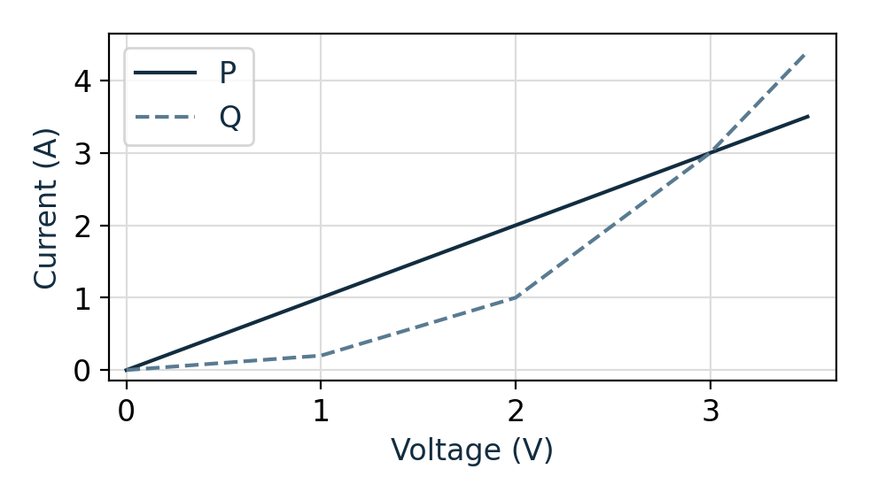
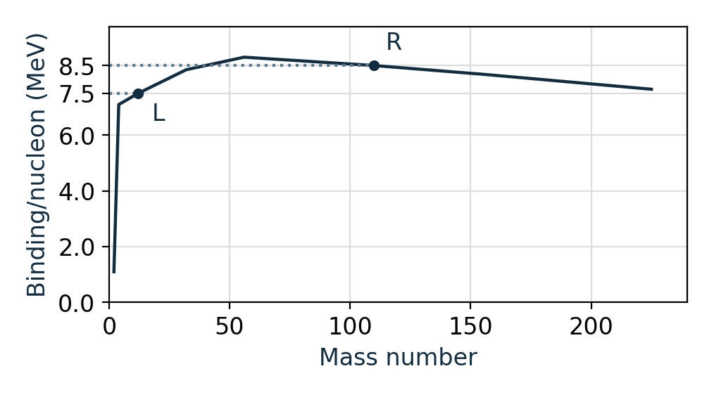
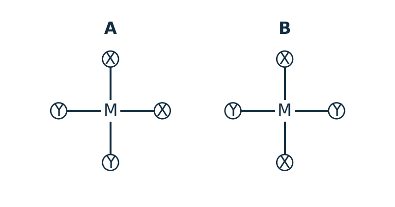
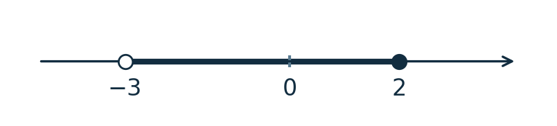
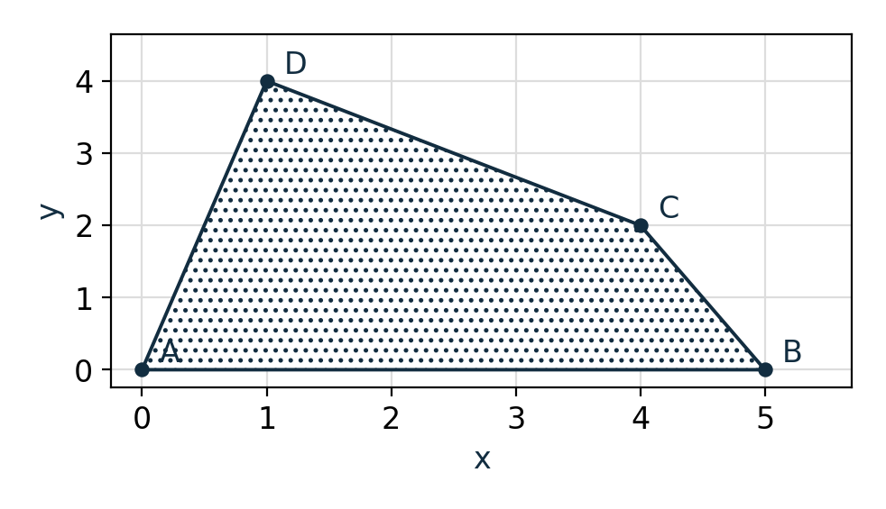
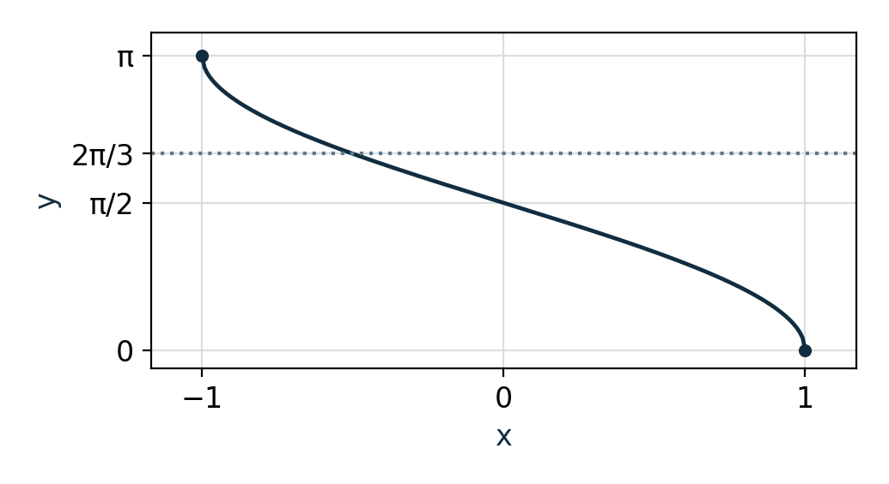
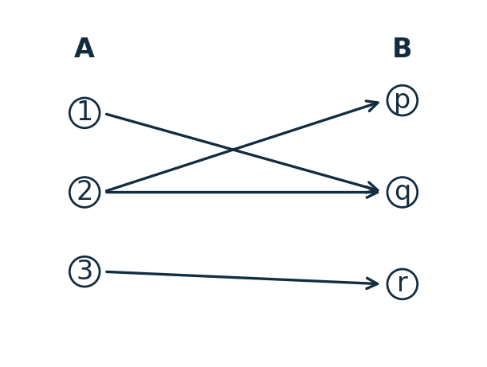
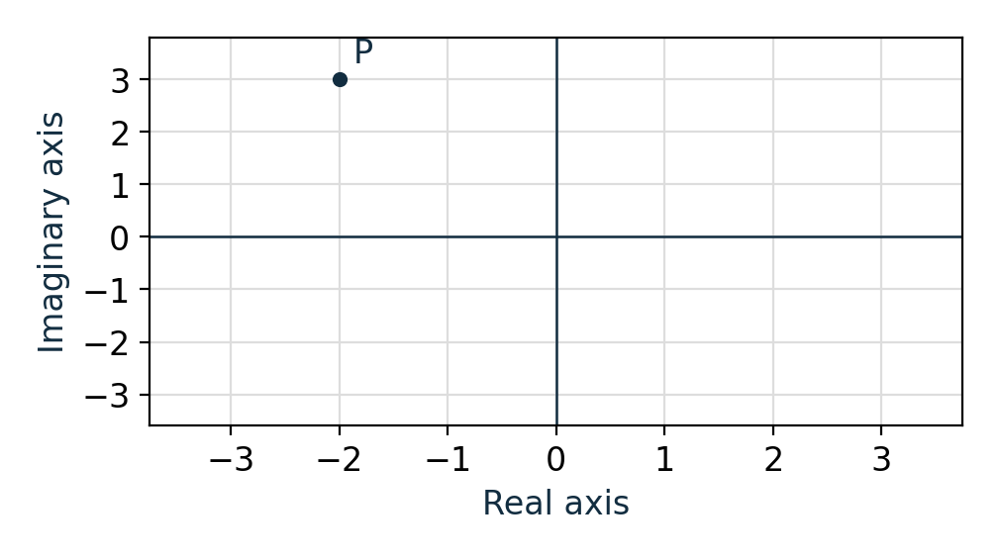

COMEDK UGET Test 24
180 minutes · 180 questions · +1 per correct answer · No negative marking
Physics
Q001. In the plotted current–voltage curves, P and Q cross at 3 V. Which observation shows that Q is non-ohmic over the plotted range?

A) Both curves have the same current at 3 V
B) Both curves pass through the origin
C) The ratio V/I varies along Q
D) Current on Q is positive at 3 V
Worked solution
Answer: (C) The ratio V/I varies along Q
Why and working: Read Q at 2 and 3 V: its currents are 1 and 3 A. The corresponding resistances are 2 and 1 Ω, so they cannot be described by a single proportionality.
Why not the others: (A) one crossing fixes only one operating point. (B) passing through zero is insufficient for linearity. (D) positive current does not establish a constant ratio.
Q002. A uniform 6 m, 120 N beam has a hinge at one end. A vertical cable attached 4 m from the hinge keeps the beam horizontal. Where must a 60 N load be placed to make the hinge's vertical reaction zero?
A) 3 m from the hinge
B) 6 m from the hinge
C) 4 m from the hinge
D) 5 m from the hinge
Worked solution
Answer: (B) 6 m from the hinge
Why and working: With zero vertical hinge force the cable carries the full 180 N. Torque balance about the hinge gives 180×4=120×3+60x, so x=6 m.
Why not the others: (A) puts the extra load at the beam midpoint. (C) puts the extra load directly under the cable. (D) would leave a nonzero vertical hinge reaction.
Q003. A circular contour in a plane perpendicular to a long straight wire is shifted sideways without changing radius. After shifting, the contour still encloses the wire but no longer shares its centre. What happens to the circulation of B in the same traversal sense?
A) It becomes zero because the contour is off-centre
B) It is unchanged even though the field magnitude varies along the new contour
C) It changes in proportion to the wire-to-contour centre distance
D) It can be found by using the field at just the nearest point times the whole circumference
Worked solution
Answer: (B) It is unchanged even though the field magnitude varies along the new contour
Why and working: The enclosed signed current is unchanged, so Ampère's law gives the original circulation. The displaced contour samples varying radii and the tangent need not everywhere match B.
Why not the others: (A) off-centre contours can enclose the same current. (C) the circulation is set by signed enclosed current. (D) the field along the shifted contour is not uniform and tangent everywhere.
Q004. A compass dipole makes equal small angular departures to either side of its stable alignment in a uniform field. How do its torques compare at the two displaced positions?
A) Equal magnitudes and the same sense
B) Both vanish for small angles
C) The sense depends only on the length of the dipole
D) Equal magnitudes and opposite senses
Worked solution
Answer: (D) Equal magnitudes and opposite senses
Why and working: The magnitude is mB sin of the departure angle. On either side the torque acts toward alignment, so the two senses are opposite.
Why not the others: (A) would not restore both positions toward alignment. (B) departures are nonzero. (C) field and moment orientation fix the torque sense.
Q005. A charge −3 μC has potential energy +12 μJ at point P relative to a fixed origin of potential. What is the potential at P?
A) +4 V
B) −36 V
C) +36 V
D) −4 V
Worked solution
Answer: (D) −4 V
Why and working: Use U=qV with signed quantities. Division by the negative charge gives 12/(−3)=−4 J/C.
Why not the others: (A) drops the charge sign. (B) multiplies instead of dividing. (C) multiplies and drops the negative sign.
Q006. A circular loop faces the reader. A bar magnet's north pole moves away along its axis on the reader's side. What is the induced-current sense seen by the reader?
A) Anticlockwise
B) The current reverses twice during withdrawal
C) Clockwise
D) There is no current while the magnet moves away
Worked solution
Answer: (C) Clockwise
Why and working: The north pole sends field through the loop away from the reader. Withdrawal reduces this flux. The loop reinforces it with an away-facing field, corresponding to clockwise current.
Why not the others: (A) would make field toward the reader. (B) the flux change has one sign throughout withdrawal. (D) withdrawal changes flux.
Q007. In a series LCR circuit the rms drops across L and C are 14 and 6 V. The source rms voltage is 17 V. What rms drop is across R?
A) 9 V
B) 15 V
C) 3 V
D) 25 V
Worked solution
Answer: (B) 15 V
Why and working: The net reactive voltage is 8 V. It is perpendicular to the resistive phasor, so V_R=√(17²−8²)=15 V.
Why not the others: (A) subtracts the reactive magnitude linearly. (C) mistakes the inductive reading for the net reactance. (D) adds the reactive voltage rather than isolating V_R.
Q008. Two linear elastic wires have the same original volume and reach the same tensile stress, but wire A strains three times as much as B. What is their stored-energy ratio A:B?
A) 3:1
B) 1:3
C) 9:1
D) 1:1
Worked solution
Answer: (A) 3:1
Why and working: Work per volume is the area under the stress–strain line, ½ stress×strain. Equal volume and equal final stress give an energy ratio equal to the strain ratio.
Why not the others: (B) inverts the ratio. (C) uses strain squared while holding modulus fixed rather than stress. (D) equal terminal stress need not imply equal strain.
Q009. A remote control emits infrared and a bactericidal lamp emits ultraviolet. Where does ordinary visible light lie in wavelength order?
A) Beyond infrared toward longer wavelengths
B) Beyond ultraviolet toward shorter wavelengths
C) Between ultraviolet and infrared
D) Outside their range on both sides
Worked solution
Answer: (C) Between ultraviolet and infrared
Why and working: Visible wavelengths are longer than ultraviolet and shorter than infrared, placing visible light between the two bands.
Why not the others: (A) ranks infrared on the wrong side of visible. (B) ranks ultraviolet on the wrong side of visible. (D) visible light occupies a continuous band between them.
Q010. An optical fibre is initially able to guide a particular ray by total internal reflection. Its cladding is replaced with material closer in index to the core while still below it. Why might the same ray leak out?
A) The critical angle decreases below every incidence angle
B) The core index becomes smaller than the cladding index by stipulation
C) The ray must reverse along the fibre after one boundary encounter
D) The critical angle increases and the ray's unchanged incidence may now be below it
Worked solution
Answer: (D) The critical angle increases and the ray's unchanged incidence may now be below it
Why and working: At fixed core index the higher cladding index increases sin θ_c=n_clad/n_core. The same incidence can then fall below the critical threshold and a refracted ray becomes possible.
Why not the others: (A) states the opposite change. (B) the replacement stays below the core index. (C) guiding loss means transmission can occur, not forced longitudinal reversal.
Q011. The same liquid flows through similar cylindrical pipes. The second pipe has twice the diameter and the same mean speed. In a model where transition depends on Reynolds number, which flow is nearer transition to turbulence?
A) The wider pipe, because its Reynolds number doubles
B) The narrower pipe, because its Reynolds number doubles
C) Both, because the speeds agree
D) The wider pipe, because its Reynolds number halves
Worked solution
Answer: (A) The wider pipe, because its Reynolds number doubles
Why and working: Re=ρvD/η. With the same liquid and speed, doubling the diameter doubles Re and can bring the flow closer to its critical value.
Why not the others: (B) assigns the larger length scale to the wrong pipe. (C) the diameter also enters Re. (D) inverts the diameter scaling.
Q012. At one point coherent beams of the same polarisation interfere destructively with fixed phase difference π. Their individual intensities are 9 and 4 units. What intensity remains?
A) 1 unit
B) 5 units
C) 13 units
D) Zero
Worked solution
Answer: (A) 1 unit
Why and working: The field amplitudes are proportional to √9=3 and √4=2, and opposite phases make the net amplitude 1. Squaring gives intensity 1.
Why not the others: (B) subtracts intensities instead of field amplitudes. (C) omits interference. (D) complete cancellation requires equal amplitudes.
Q013. A monochromatic pulse with photon energy ε contains N photons. A second pulse at half the frequency has the same energy as the first but lasts four times as long. How does its average photon arrival rate compare?
A) Twice the first
B) One quarter of the first
C) The same
D) Half the first
Worked solution
Answer: (D) Half the first
Why and working: The new energy per photon is ε/2, giving 2N photons. These arrive over four times the duration, so the mean rate is 2/4 of the original.
Why not the others: (A) compares counts without duration. (B) uses duration without counting the additional photons. (C) ignores the difference between the two scale factors.
Q014. A vessel contains 0.20 kg of ice and 0.30 kg of water in equilibrium at 0°C. Heat is removed steadily. How much must be removed to reach the instant at which no liquid remains, using L_f=330 kJ/kg?
A) 66 kJ
B) 165 kJ
C) Zero
D) 99 kJ
Worked solution
Answer: (D) 99 kJ
Why and working: Only the initial 0.30 kg of liquid has to freeze. While both phases coexist, the temperature is fixed and freezing releases 0.30×330=99 kJ.
Why not the others: (A) uses the initial ice mass. (B) counts mass already solid as if it also had to freeze. (C) phase change releases heat even at constant temperature.
Q015. In the Bohr model the electron in orbit A has kinetic energy 9 times that in orbit B. During a transition from B to A, how does the emitted photon energy compare with the kinetic energy K_B?
A) It is 9K_B
B) It is 8K_B
C) It is K_B/9
D) It is 10K_B
Worked solution
Answer: (B) It is 8K_B
Why and working: Total orbital energy is minus kinetic energy. Hence E_B=−K_B and E_A=−9K_B. The downward gap E_B−E_A equals 8K_B.
Why not the others: (A) uses the final magnitude instead of the gap. (C) compares absolute energies rather than subtracting them. (D) adds the initial and final kinetic magnitudes.
Q016. Read the two labelled product-group ordinates on the binding-energy plot. If the two groups of products represented by L and R have equal total nucleon counts, what parent binding energy per nucleon corresponds to zero net release?

A) 8.0 MeV per nucleon
B) 16.0 MeV per nucleon
C) 1.0 MeV per nucleon
D) 8.5 MeV per nucleon
Worked solution
Answer: (A) 8.0 MeV per nucleon
Why and working: The graph gives 7.5 and 8.5 MeV per nucleon. Zero release means total binding energy is unchanged. Equal group nucleon counts give their average, 8.0 MeV per nucleon.
Why not the others: (B) adds the two ordinates without dividing by the combined count. (C) uses a difference between the ordinates. (D) uses just one fragment value.
Q017. An ideal gas is compressed from the same initial state to the same final volume by a reversible isothermal path and by a reversible adiabatic path. On which path does more work have to be done on the gas, and why?
A) The isothermal path, because its pressure is higher at intermediate volumes
B) The adiabatic path, because its pressure is higher at intermediate volumes
C) They require equal work because the change in volume is the same
D) Neither requires work because both start in the same state
Worked solution
Answer: (B) The adiabatic path, because its pressure is higher at intermediate volumes
Why and working: During adiabatic compression, work raises T because no heat leaves. At each intermediate compressed volume its pressure exceeds the isothermal pressure. Integrating that greater pressure over the same decrease in volume requires more work.
Why not the others: (A) reverses the comparison at equal compressed volume. (C) work depends on the whole pressure path. (D) a nonzero volume change at positive pressure requires work.
Q018. As the depletion region forms in an unbiased p–n junction, what stops unrestricted majority-carrier diffusion across the junction?
A) Fixed ions vanish and carrier concentrations become equal in the two bulk regions
B) The semiconductor's crystal lattice becomes entirely insulating
C) Carrier thermal motion ceases as soon as the junction forms
D) The internal field drives a drift that balances diffusion at equilibrium
Worked solution
Answer: (D) The internal field drives a drift that balances diffusion at equilibrium
Why and working: Initial majority-carrier diffusion exposes fixed ions. Their field opposes further net transfer. Equilibrium balances drift and diffusion rather than eliminating individual carrier motion.
Why not the others: (A) fixed charge is central to the internal field. (B) the p and n bulk regions remain semiconducting. (C) microscopic motion continues at thermal equilibrium.
Q019. Along an electric field line in a static field, a small test charge is moved in the direction of the arrow. Which quantity necessarily decreases wherever field magnitude is positive?
A) Potential energy of a negative charge
B) Electric potential
C) The magnitude of the field
D) Separation between neighbouring lines
Worked solution
Answer: (B) Electric potential
Why and working: The directional derivative of V along E is −abs(E), so the potential falls along a field line. U=qV can rise for a negative charge.
Why not the others: (A) multiplication by negative q reverses the potential change. (C) field strength can increase or decrease along a line. (D) the line-spacing trend depends on the field geometry.
Q020. A gas has five active quadratic degrees of freedom. If two additional quadratic degrees become active across a second temperature interval, what is the new molar heat capacity at constant volume in the ideal equipartition model?
A) 5R/2
B) 7R
C) 9R/2
D) 7R/2
Worked solution
Answer: (D) 7R/2
Why and working: At constant volume each active quadratic contribution gives R/2 per mole. Seven contributions give 7R/2.
Why not the others: (A) is the old value. (B) uses R per quadratic contribution. (C) adds four active degrees instead of two.
Q021. Charges +q and −q are fixed a distance a apart. A third positive charge +Q is brought from infinity to a point equidistant from them. How does this alter the total electrostatic energy of the three-charge arrangement relative to the original pair?
A) It leaves the total energy unchanged
B) It lowers the energy by kqQ/a
C) It raises the energy by 2kqQ/a
D) It makes the total energy zero
Worked solution
Answer: (A) It leaves the total energy unchanged
Why and working: At the new point the original potentials are equal and opposite. The two new pair-energy terms therefore cancel, leaving the original pair energy −kq²/a.
Why not the others: (B) counts only the attractive interaction. (C) treats both new interactions as repulsive. (D) the original pair energy remains negative.
Q022. A 6 V bulb rated 3 W is treated as a constant resistance. Two identical bulbs are wired in series across 6 V. What total power is dissipated by the pair?
A) 3 W
B) 6 W
C) 1.5 W
D) 0.75 W
Worked solution
Answer: (C) 1.5 W
Why and working: Each bulb resistance is 6²/3=12 Ω. The pair is 24 Ω and draws 36/24=1.5 W. Each bulb separately dissipates half of that.
Why not the others: (A) would correspond to the original single 6 V bulb. (B) applies full rated voltage to both bulbs. (D) gives the power per bulb in series.
Q023. A simple pendulum takes time T for one small oscillation. A replacement is designed with the same location and length four times as large. Compared with the original, how much total time will the new pendulum take to complete half as many oscillations?
A) The same total time
B) Twice as long
C) One half as long
D) Four times as long
Worked solution
Answer: (A) The same total time
Why and working: The period scales as √L, so the new period is 2T. Multiplying by half the number of periods cancels the two factors.
Why not the others: (B) uses the period ratio without the number of oscillations. (C) uses only the halved count. (D) treats period as proportional to length and ignores the count.
Q024. A long tightly wound solenoid is stretched to twice its axial length without changing current or total turns. In the long-solenoid approximation, what field is expected near its centre?
A) Twice the original
B) One half of the original
C) The same as originally
D) Zero
Worked solution
Answer: (B) One half of the original
Why and working: The internal field is approximately μ₀nI, where n is turns per unit length. Stretching halves n, giving half the field.
Why not the others: (A) uses length instead of turn density. (C) equal total turns do not mean equal turns per metre. (D) current remains nonzero.
Q025. A proposed magnetic field line stops at a point inside an ordinary magnet where the field is nonzero. What is wrong with this representation?
A) The path must stop precisely at the geometric centre instead
B) The field line should continue through the magnet and form part of a closed path
C) The field must reverse discontinuously at the endpoint
D) Lines inside magnets must be disconnected from the exterior field
Worked solution
Answer: (B) The field line should continue through the magnet and form part of a closed path
Why and working: Magnetic flux has no sources or sinks in the ordinary dipole model. The line can pass through the material and close outside rather than terminate internally.
Why not the others: (A) an ordinary magnet has no isolated pole at its centre. (C) field-line continuity does not require a jump in B. (D) interior and exterior fields connect.
Q026. Two strings have the same vibrating length and tension. String B has four times the linear mass density of A. Which harmonic of B matches the fundamental frequency of A?
A) First
B) Fourth
C) Third
D) Second
Worked solution
Answer: (D) Second
Why and working: Wave speed √(T/μ) halves on B. Its fundamental therefore halves; its second harmonic doubles that frequency and restores A's fundamental.
Why not the others: (A) would still be an octave below A. (B) would give twice A's fundamental. (C) would give 1.5 times A's fundamental.
Q027. The current through an ideal inductor rises at +3 A/s, then holds constant, then falls at −1 A/s. Which ordering by signed self-induced emf is correct with ε=−L dI/dt?
A) Falling interval < constant interval < rising interval
B) Constant interval < rising interval < falling interval
C) Rising interval < constant interval < falling interval
D) All intervals give the same emf
Worked solution
Answer: (C) Rising interval < constant interval < falling interval
Why and working: The signed emfs are −3L, 0 and +L in order of the intervals. This locates zero between a negative rise emf and positive fall emf.
Why not the others: (A) uses dI/dt without Lenz's minus sign. (B) puts zero below the negative value. (D) emf follows the current derivative.
Q028. A series RLC branch is initially driven below its original resonant frequency. The source frequency is fixed and capacitance is increased until resonance occurs. How did the resonance frequency move?
A) It increased to the source frequency
B) It decreased to the source frequency
C) It stayed fixed and resistance alone changed
D) It jumped first to twice the source frequency
Worked solution
Answer: (B) It decreased to the source frequency
Why and working: The tuning relation is f₀=1/(2π√LC). Increasing C lowers f₀, allowing it to meet a drive originally below it.
Why not the others: (A) gives the wrong direction of tuning. (C) capacitance sets the resonance together with inductance. (D) no intermediate doubling is required.
Q029. A particle has acceleration a(t)=6t−2 in SI units and velocity 4 m/s at t=0. When does its velocity first return to 4 m/s after t=0?
A) 1/3 s
B) 2/3 s
C) 1 s
D) 2 s
Worked solution
Answer: (B) 2/3 s
Why and working: Integrate acceleration to obtain v=4+3t²−2t. Returning to 4 means t(3t−2)=0; the positive root is 2/3.
Why not the others: (A) locates a=0 instead of v returning. (C) does not cancel the quadratic and linear changes. (D) uses the linear coefficient without balancing the quadratic term.
Q030. A convex spherical interface of radius +15 cm takes rays from air into glass of index 1.50. Where must a real on-axis object be located so the transmitted rays are parallel to the axis?
A) 30 cm before the surface
B) 15 cm before the surface
C) 45 cm before the surface
D) 30 cm beyond the surface
Worked solution
Answer: (A) 30 cm before the surface
Why and working: For a parallel output, n₂/v is zero. Then −1/u=(1.50−1.00)/15=1/30 cm⁻¹, so the signed object position u is −30 cm.
Why not the others: (B) uses the surface radius in place of the object focal distance. (C) uses the image-space refractive index in the object term. (D) the sign places the source on the incident side.
Q031. A double-slit experiment is projected onto a screen moved so far that D increases by 60%. The experimenter wants the original width using a wavelength 25% larger. What factor of the original slit separation is needed?
A) 1.6
B) 1.25
C) 0.8
D) 2
Worked solution
Answer: (D) 2
Why and working: At fixed fringe width λD/d must stay constant. The product λD grows by 1.25×1.60=2, so d must also double.
Why not the others: (A) ignores the wavelength change. (B) ignores the screen change. (C) uses an inverse wavelength factor and misses the distance increase.
Q032. Two nonzero vectors a and b have a·b=0. For a third vector c parallel to a, which statement must hold about b×c if c is nonzero?
A) Its magnitude vanishes
B) Its magnitude equals abs(b+c)
C) Its magnitude is abs(b)abs(c)
D) It is parallel to b and c
Worked solution
Answer: (C) Its magnitude is abs(b)abs(c)
Why and working: The zero dot product makes a and b perpendicular. A nonzero parallel c is therefore perpendicular to b, so sin of their angle is one in the cross-product magnitude.
Why not the others: (A) applies the zero cross product for parallel vectors. (B) the magnitude of a vector sum uses a different formula. (D) the cross product is perpendicular to each input.
Q033. A nonrelativistic particle of mass m has de Broglie wavelength λ. If another particle of mass 2m has wavelength 2λ, what is its kinetic energy relative to the first?
A) 1/4
B) 1/2
C) 1/8
D) 1/16
Worked solution
Answer: (C) 1/8
Why and working: The second momentum is p/2 because wavelength doubles. Then K₂/K₁=(p/2)²/(2p²)=1/8, including the doubled mass in the denominator.
Why not the others: (A) ignores the change of mass. (B) accounts for mass but not momentum. (D) squares the mass factor as well.
Q034. In hydrogen, line X is from 4→3 and line Y from 3→2. Which carries the larger photon energy?
A) X, because n=4 is larger than n=3
B) They carry the same energy because each transition steps down once
C) Y, because the lower levels have a greater adjacent energy gap
D) Either could have greater energy depending on detector distance
Worked solution
Answer: (C) Y, because the lower levels have a greater adjacent energy gap
Why and working: Bohr energies are −13.6/n² eV. The gap from 3 to 2 is proportional to 1/4−1/9, larger than 1/9−1/16 from 4 to 3.
Why not the others: (A) the initial quantum number alone does not determine the gap. (B) adjacent spacings are unequal. (D) the emitted photon energy is fixed by the transition.
Q035. At one knot, tensions of 10 N east and 10 N north are already acting. Which additional force can equilibrate it?
A) 10√2 N southwest at 45°
B) 20 N southwest at 45°
C) 10√2 N northeast at 45°
D) 10 N due west
Worked solution
Answer: (A) 10√2 N southwest at 45°
Why and working: The existing resultant has east and north components 10 N each. Its magnitude is 10√2 N and equilibrium requires its opposite.
Why not the others: (B) adds perpendicular force magnitudes directly. (C) reinforces the existing resultant. (D) cancels only the eastward component.
Q036. A pair of light nuclei combines into one more tightly bound nucleus without losing any nucleons. What accounting explains the released energy?
A) The products have lower total rest mass at the same total nucleon count
B) Nucleon number falls sharply, removing all binding energy
C) Chemical electron rearrangement supplies the entire energy release
D) A larger binding energy means a larger product rest mass
Worked solution
Answer: (A) The products have lower total rest mass at the same total nucleon count
Why and working: At the same nucleon count, extra binding lowers the mass relative to the separated nucleons. The rest-energy difference can be released as radiation and kinetic energy.
Why not the others: (B) nucleon count is stipulated constant. (C) nuclear binding provides the energy scale. (D) binding energy subtracts from rest energy.
Q037. A measured diode curve shows strong current for forward voltages above a knee and a very small reverse current away from breakdown. What does this say about reversing the supply at the same voltage magnitude above the forward knee and below breakdown?
A) The current magnitude drops sharply
B) The current magnitude stays the same and only changes sign
C) The diode switches immediately into reverse breakdown
D) The current becomes exactly twice the forward current
Worked solution
Answer: (A) The current magnitude drops sharply
Why and working: Reversing the supply exchanges the forward conduction region for the reverse region. The given curve has much smaller reverse leakage there.
Why not the others: (B) would require an odd, symmetric current–voltage characteristic. (C) breakdown is excluded by the voltage condition. (D) the direction change suppresses conduction in the specified range.
Q038. A mass on a light string moves in a vertical circle of radius R. At the top the tension equals its weight. What is its speed there?
A) √(gR)
B) √(2gR)
C) √(gR/2)
D) 2√(gR)
Worked solution
Answer: (B) √(2gR)
Why and working: Weight and tension both point toward the centre at the top. Thus mv²/R=mg+mg=2mg and v=√(2gR).
Why not the others: (A) counts weight alone. (C) assumes only half the weight contributes. (D) forgets to take the square root of two.
Q039. An electric dipole in a uniform field is turned while its centre stays fixed. Which change can occur solely from this rotation?
A) Its net force changes from zero to pE
B) Its two charges acquire the same sign
C) It begins to translate from a net field-gradient force
D) Its torque changes while its net electric force remains zero
Worked solution
Answer: (D) Its torque changes while its net electric force remains zero
Why and working: The two charges feel opposite equal forces in the uniform field. Their separation produces torque pE sin θ, which changes as the dipole rotates.
Why not the others: (A) pE is an energy or torque scale, not a net force. (B) rotating does not change the charges. (C) the stated field has no gradient.
Q040. A hollow conductor and a hollow insulator each receive the same net charge. In electrostatic equilibrium which material permits free charge to redistribute along its exterior to equalise potential?
A) The insulator only
B) Both for the same reason independent of conductivity
C) Neither because charge is conserved
D) The conductor
Worked solution
Answer: (D) The conductor
Why and working: Free carriers in a conductor move if there is a tangential electric field until the material is equipotential. An insulator does not support the same free motion under ordinary conditions.
Why not the others: (A) does not allow free redistribution as readily. (B) the effect depends on mobile charge. (C) conservation permits redistribution at fixed net charge.
Q041. A turntable starts at 10 rad/s. Angular acceleration is −2 rad/s² for 3 s, then zero for 2 s. What angle does it rotate through over the full interval?
A) 21 rad
B) 25 rad
C) 29 rad
D) 50 rad
Worked solution
Answer: (C) 29 rad
Why and working: During the first interval the average angular speed is (10+4)/2=7 rad/s, giving 21 rad. The last two seconds at 4 rad/s add 8 rad.
Why not the others: (A) omits the constant-speed interval. (B) uses an incorrect speed during one interval. (D) assumes the initial speed persists.
Q042. At fixed temperature and length, a wire's cross-sectional area is tripled. What happens to its conductance if it is made from the same material throughout?
A) It stays the same
B) It becomes one third
C) It triples
D) It increases ninefold
Worked solution
Answer: (C) It triples
Why and working: Resistance is ρL/A, so tripling A gives one third the resistance. Conductance is 1/R and triples.
Why not the others: (A) confuses conductance with material conductivity. (B) gives the resistance scaling. (D) applies a quadratic area factor.
Q043. A negative particle enters a uniform region along +x. The magnetic field is along +z and the electric field along +y. If the two force magnitudes are equal at entry, what is its initial acceleration?
A) Along +y with twice either separate magnitude divided by mass
B) Along −y with twice either separate magnitude divided by mass
C) Zero
D) Along +z
Worked solution
Answer: (C) Zero
Why and working: The magnetic term v×B points −y and q<0 flips that force to +y. The electric force on negative q is along −y. Equal magnitudes cancel.
Why not the others: (A) omits the oppositely directed electric contribution. (B) omits the oppositely directed magnetic contribution. (D) neither force has a z component.
Q044. Two planets have equal mean density. Planet B has twice the radius of A. What is v_escape,B/v_escape,A from their surfaces?
A) √2
B) 2
C) 4
D) 1/2
Worked solution
Answer: (B) 2
Why and working: At equal density M∝R³, and escape speed √(2GM/R) scales as √(R²)=R. Doubling R doubles the speed.
Why not the others: (A) accounts for radius but uses an incorrect mass scaling. (C) gives the square of the speed ratio. (D) inverts the relation.
Q045. A ferromagnetic specimen is magnetised by realigning its existing domains. Which observation after the external field is removed best distinguishes the original domain alignment from a reversible paramagnetic response?
A) The compass deflects only during application of the original field
B) The specimen weakly attracts the source while the source is present
C) A compass near the specimen remains deflected; demagnetising the specimen removes that deflection
D) Reversing the source changes the induced direction while the source is present
Worked solution
Answer: (C) A compass near the specimen remains deflected; demagnetising the specimen removes that deflection
Why and working: Remanent magnetisation supplies a field even after the source is gone. Removing remanence by demagnetisation then removes the residual compass effect.
Why not the others: (A) a reversible response can do this. (B) attraction in an applied field also occurs in paramagnets. (D) responses to a present field alone do not show remanence.
Q046. Two separate circuits have mutual inductance M. The first carries I₁=at² for t>0 and the second is open. How does the magnitude of its induced emf at 2 s compare with its magnitude at 1 s?
A) Four times as large
B) Twice as large
C) The same
D) Half as large
Worked solution
Answer: (B) Twice as large
Why and working: The induced emf magnitude is M times the current slope, 2Mat. Doubling the time doubles the slope despite the current itself quadrupling.
Why not the others: (A) compares currents rather than slopes. (C) would require a constant slope. (D) takes the slope ratio in reverse.
Q047. A horizontal water pipe constricts from area A to A/3. The inlet speed is 2 m/s. In ideal steady flow, how much greater is the upstream pressure than the throat pressure for density 1000 kg/m³?
A) 4000 Pa
B) 20000 Pa
C) 16000 Pa
D) −16000 Pa
Worked solution
Answer: (C) 16000 Pa
Why and working: Continuity gives throat speed 6 m/s. Bernoulli at equal elevation gives P_up−P_throat=1000(6²−2²)/2=16000 Pa.
Why not the others: (A) squares the difference of speeds rather than subtracting squares. (B) adds the velocity-square terms. (D) reverses the pressure difference.
Q048. A sinusoidal circuit carries 13 A rms from a 100 V rms supply and its power factor is 5/13. What is the magnitude of the quadrature current?
A) 5 A
B) 12 A
C) 8 A
D) 13 A
Worked solution
Answer: (B) 12 A
Why and working: The in-phase current is 13×5/13=5 A. The quadrature component is perpendicular to it, giving √(13²−5²)=12 A.
Why not the others: (A) gives the in-phase component. (C) subtracts orthogonal magnitudes arithmetically. (D) gives the total current.
Q049. A thin biconvex lens is made from glass with a higher refractive index, keeping the signed curvatures and external air unchanged. What happens to its focal length?
A) It becomes shorter in magnitude
B) It becomes longer in magnitude
C) It becomes negative
D) It must stay fixed because the radii agree
Worked solution
Answer: (A) It becomes shorter in magnitude
Why and working: The lens-maker power increases with the factor n−1 at fixed curvatures. It remains a converging lens, so its positive focal length 1/P decreases.
Why not the others: (B) that would require reduced power. (C) the power stays positive for the biconvex form in air. (D) the index enters independently of curvature.
Q050. Two rods have equal length and area and connect the same fixed hot and cold temperatures. The second has twice the thermal conductivity. How much heat flows through it over one-half the time of the first in steady flow?
A) Twice the amount
B) Half the amount
C) The same amount
D) Four times the amount
Worked solution
Answer: (C) The same amount
Why and working: The rate kAΔT/L doubles for the second rod. Multiplying the new rate by half the duration makes the transferred heat equal.
Why not the others: (A) compares rates without durations. (B) uses only the changed duration. (D) multiplies both effects as increases.
Q051. Someone treats the centre of a normally illuminated single-slit diffraction screen as dark because opposite edges are farthest apart at the slit. Which observation corrects the reasoning?
A) The two edges emit waves of opposite frequency
B) The central point receives light from only one edge
C) The first minimum marks the in-phase direction
D) Path difference to the central direction is zero, so aperture contributions arrive in phase
Worked solution
Answer: (D) Path difference to the central direction is zero, so aperture contributions arrive in phase
Why and working: Phase at the screen depends on path difference to the observation point, not separation within the aperture. In the central normal direction the contributions reinforce.
Why not the others: (A) same monochromatic source fixes their frequency. (B) contributions come from the whole illuminated aperture. (C) the first minimum has cancellation.
Q052. In a centre-tapped full-wave rectifier, an oscilloscope shows output peaks at 0 ms, 8 ms and 16 ms. What is the AC source period and why?
A) 8 ms, because each diode conducts during both half-cycles
B) 4 ms, because one source period produces four peaks
C) 32 ms, because two periods are needed between output peaks
D) 16 ms, because the two diode paths alternate and both half-cycles produce peaks
Worked solution
Answer: (D) 16 ms, because the two diode paths alternate and both half-cycles produce peaks
Why and working: Each successive output peak is half a source period later. The observed 8 ms spacing therefore corresponds to an input period of 16 ms.
Why not the others: (A) confuses output repetition with input period. (B) full-wave rectification gives two pulses per input cycle. (C) the input does not skip cycles in ordinary full-wave operation.
Q053. A sliding block comes to rest on a rough floor in an insulated room. Why is running the overall process backward by merely waiting inconsistent with macroscopic reversibility?
A) Kinetic energy was destroyed rather than transferred
B) The block and floor cannot reach equilibrium because the room is insulated
C) It would require dispersed thermal energy to reorganise spontaneously into directed motion while leaving no other change
D) Static friction would have to supply unlimited mechanical energy while the system stays in equilibrium
Worked solution
Answer: (C) It would require dispersed thermal energy to reorganise spontaneously into directed motion while leaving no other change
Why and working: Friction converts mechanical work into internal energy and creates entropy. The exact reverse in the isolated room would restore organised motion while reducing total entropy.
Why not the others: (A) energy is conserved but spread into microscopic motion. (B) thermal equilibration is possible inside an insulated room. (D) equilibrium does not provide an unlimited mechanical energy source.
Q054. Two distinct closed surfaces each enclose net charge +q. A large external negative charge is brought close to one surface without crossing either. How do the total outward fluxes compare?
A) The nearer surface acquires zero net flux
B) Both remain q/ε₀
C) The farther surface has the smaller net flux
D) Both become negative
Worked solution
Answer: (B) Both remain q/ε₀
Why and working: Only enclosed net charge determines the flux by Gauss's law. External charges alter field distribution on each surface without changing the integrated net flux.
Why not the others: (A) the external charge contributes no net flux to a closed surface. (C) distance to the external charge does not affect the total. (D) both still enclose positive q.
Q055. An isolated parallel-plate capacitor is fully filled with a linear dielectric of relative permittivity κ. For fixed spacing and free charge, what fraction of its original voltage remains?
A) κ
B) 1
C) 1/κ²
D) 1/κ
Worked solution
Answer: (D) 1/κ
Why and working: The dielectric raises capacitance to κC. Since free charge stays fixed, V=Q/C falls to the reciprocal fraction 1/κ.
Why not the others: (A) gives the capacitance factor. (B) would describe a clamped battery voltage. (C) applies an extra dielectric factor.
Q056. A dilute gas doubles its molecular number density while molecular size stays fixed. If temperature is kept constant, what happens to the mean free path?
A) It halves
B) It doubles
C) It remains fixed because temperature is fixed
D) It falls to one quarter
Worked solution
Answer: (A) It halves
Why and working: The collision distance scales as 1/(√2 nσ), where n is number density and σ fixed cross section. Doubling n halves the path.
Why not the others: (B) uses direct rather than inverse scaling. (C) number density changes even at fixed temperature. (D) applies inverse square to density.
Q057. A cell supplies 1 A through an external load of 4 Ω, then 0.5 A through an external load of 10 Ω. Assuming constant internal resistance, what are its emf and internal resistance?
A) 6 V and 2 Ω
B) 5 V and 1 Ω
C) 4 V and 2 Ω
D) 6 V and 6 Ω
Worked solution
Answer: (A) 6 V and 2 Ω
Why and working: The two terminal voltages are 4 and 5 V. The larger current lowers V by 1 V over 0.5 A, giving r=2 Ω. Then ε=4+1×2=6 V.
Why not the others: (B) does not fit the 1 V change across 0.5 A. (C) uses the first terminal voltage as the emf. (D) confuses the ratio of emf to current with internal resistance alone.
Q058. A straight current-carrying segment runs east in a northward uniform magnetic field. It is rotated until it runs west while current magnitude is kept fixed. What changes about the magnetic force?
A) Its magnitude doubles and its direction stays fixed
B) It turns to lie due north
C) It goes to zero
D) Its direction reverses and magnitude is unchanged
Worked solution
Answer: (D) Its direction reverses and magnitude is unchanged
Why and working: The directed length reverses in I L×B, hence the force reverses. Both orientations are perpendicular to B, so the magnitude ILB is unchanged.
Why not the others: (A) the angle remains 90° and the cross product reverses. (B) the force stays perpendicular to B. (C) the wire remains perpendicular to the field.
Q059. An open–open pipe and a closed–open pipe have the same length. Which frequency of the open–open pipe is closest to, but strictly above, the first overtone of the closed pipe?
A) Its second harmonic
B) Its fundamental
C) Its third harmonic
D) None because all frequencies of the open pipe are lower
Worked solution
Answer: (A) Its second harmonic
Why and working: In units of v/(4L), the closed pipe's first overtone has frequency 3. The open pipe's frequencies start at 2, 4 and 6 in those units. The first above 3 is 4, its second harmonic.
Why not the others: (B) the fundamental corresponds to 2 and lies below 3. (C) the third harmonic lies above but farther away. (D) the open pipe has harmonics above the closed pipe's overtone.
Q060. A ferromagnetic sample is warmed through its Curie point in a weak applied field. Which change is expected?
A) Spontaneous ordering disappears, but a weak field-induced paramagnetic response can remain
B) The applied field can no longer influence any atomic moments
C) Its spontaneous magnetisation must increase
D) The sample necessarily becomes a perfect diamagnet
Worked solution
Answer: (A) Spontaneous ordering disappears, but a weak field-induced paramagnetic response can remain
Why and working: Thermal motion above the Curie point destroys long-range ferromagnetic order. Moments may still align weakly in the applied field, giving a paramagnetic response.
Why not the others: (B) loss of collective order does not eliminate field response. (C) thermal disorder reduces spontaneous order. (D) a ferromagnetic transition is not a transition to perfect diamagnetism.
Chemistry
Q061. An ideal solution has no volatile solute. A pressure sensor gives p°=100 kPa for the pure solvent, while two vessels give 80 and 90 kPa. If each vessel contains the same number of solvent moles, what is the ratio of solute moles in the first vessel to those in the second?
A) 9:4
B) 2:1
C) 4:9
D) 8:9
Worked solution
Answer: (A) 9:4
Why and working: Raoult's law gives solvent mole fractions 0.80 and 0.90. At fixed solvent amount the solute-to-solvent ratios are 0.20/0.80=1/4 and 0.10/0.90=1/9. Their ratio is 9/4.
Why not the others: (B) compares the relative lowerings directly even though total moles differ. (C) uses the reverse vessel order. (D) compares only solvent mole fractions.
Q062. During light-initiated chlorination of ethane, which elementary step forms HCl while sustaining the reaction chain?
A) Two Cl radicals combine to make Cl₂
B) An ethyl radical joins a chlorine radical to make chloroethane
C) Cl₂ splits into two Cl radicals
D) Cl radical abstracts H from ethane, leaving an ethyl radical
Worked solution
Answer: (D) Cl radical abstracts H from ethane, leaving an ethyl radical
Why and working: The abstraction step consumes one radical and creates another while transferring H to chlorine. HCl and the ethyl radical are both products.
Why not the others: (A) is radical termination and yields no HCl. (B) consumes two radicals rather than sustaining the chain. (C) is initiation without hydrogen transfer.
Q063. At extreme dilution, the molar conductivity of Na₂SO₄ is 260 S·cm²/mol and the contribution of Na⁺ is 50 in the same units. What is the contribution of SO₄²⁻ per mole of sulfate ions?
A) 210 S·cm²/mol
B) 80 S·cm²/mol
C) 160 S·cm²/mol
D) 360 S·cm²/mol
Worked solution
Answer: (C) 160 S·cm²/mol
Why and working: One mole of salt gives two moles of Na⁺ and one mole of sulfate. Kohlrausch's sum reads 260=2×50+λ_sulfate.
Why not the others: (A) subtracts one sodium contribution only. (B) unnecessarily divides the sulfate contribution by its charge magnitude. (D) adds rather than subtracts sodium's share.
Q064. A first-order reaction takes 12 min for concentration to fall from 0.80 to 0.20 M. How much further time takes it from 0.20 to 0.10 M?
A) 3 min
B) 12 min
C) 6 min
D) 18 min
Worked solution
Answer: (C) 6 min
Why and working: The first interval consists of two halvings, 0.80 to 0.40 to 0.20. For first order each halving takes the same time, so the next one takes six minutes.
Why not the others: (A) treats the absolute concentration drop as the measure of time. (B) uses the duration of two half-lives. (D) gives the cumulative time from the first observation.
Q065. How many moles of oxygen atoms are contained in 0.25 mol of Al₂(SO₄)₃?
A) 0.75 mol
B) 1.0 mol
C) 12 mol
D) 3.0 mol
Worked solution
Answer: (D) 3.0 mol
Why and working: Each formula unit contains three groups with four oxygens each. Thus one mole of formula units contains 12 mol of oxygen atoms, and a quarter mole contains 3 mol.
Why not the others: (A) counts sulfate groups instead of oxygen atoms. (B) counts only one of the three sulfate groups. (C) gives oxygen atoms per mole of formula units, before scaling.
Q066. A steel sample contains interstitial carbon. In a second sample some iron atoms are replaced by another comparably sized metal. What distinction would a lattice-site count reveal?
A) Both samples add only atoms between complete regular iron sites
B) The interstitial case retains iron on the regular sites while adding atoms between them
C) In both samples every added atom must replace an iron site
D) The interstitial sample has no host lattice after carbon enters
Worked solution
Answer: (B) The interstitial case retains iron on the regular sites while adding atoms between them
Why and working: Interstitial incorporation fills gaps with small atoms. Substitutional alloying changes occupancy of regular sites, so the count of regular sites holding iron can decline in the second case.
Why not the others: (A) replacement changes regular-site occupants. (C) carbon in the first case goes between sites. (D) an interstitial phase retains the metallic framework.
Q067. Two octahedral complexes each have d⁵ ions, one high spin and one low spin. How many more lower-level t₂g electrons does the low-spin ion have?
A) Two
B) Four
C) One
D) Zero
Worked solution
Answer: (A) Two
Why and working: High-spin d⁵ fills t₂g with three singles and e_g with two singles. Low-spin d⁵ has all five electrons in t₂g, so the lower group gains two.
Why not the others: (B) confuses the difference in unpaired count with the lower-group population difference. (C) ignores that both e_g electrons are placed in t₂g. (D) identical total d count can fill the split groups differently.
Q068. The 3p and 4s subshells both have n+l=4. Which fills first under the usual Aufbau ordering rule?
A) 4s, because s always precedes p regardless of n
B) Both fill together because their n+l values agree
C) Neither can be occupied in a ground state
D) 3p, because it has the smaller n
Worked solution
Answer: (D) 3p, because it has the smaller n
Why and working: When n+l is tied, the subshell with smaller principal quantum number is filled first. Thus 3p precedes 4s in the usual order.
Why not the others: (A) subshell letters alone do not settle a tie across shells. (B) the secondary ordering is by n. (C) both subshells occur in ground configurations.
Q069. Chlorobenzene is nitrated under ordinary electrophilic aromatic substitution conditions. Which result would contradict the usual combined deactivation and directing behaviour of chlorine?
A) Slower nitration than benzene with mainly ortho and para products
B) Faster nitration than benzene with a strongly predominant meta product
C) An ortho product alongside a para product
D) A lower overall rate than benzene even when the para product is favoured
Worked solution
Answer: (B) Faster nitration than benzene with a strongly predominant meta product
Why and working: The −I effect deactivates chlorobenzene overall, while lone-pair resonance favours ortho/para attack. Faster reaction with strong meta predominance contradicts both features.
Why not the others: (A) matches deactivation together with o,p direction. (C) both listed positions are expected. (D) relative preference of ring sites can coexist with lower overall reactivity.
Q070. Which two-carbon alcohol is the starting liquid in an ordinary fermentation-to-vinegar sequence, where oxidation gives ethanoic acid?
A) Methanol
B) Ethanol
C) Ethane-1,2-diol
D) Propan-2-ol
Worked solution
Answer: (B) Ethanol
Why and working: Ethanol is CH₃CH₂OH. Its two-carbon chain can retain both carbons as its primary alcohol group is oxidised via ethanal to ethanoic acid.
Why not the others: (A) contains only one carbon. (C) its second hydroxyl changes the oxidation products. (D) has three carbons and a secondary alcohol group.
Q071. Fluorine is more electronegative than chlorine, yet both form one ordinary covalent bond in their respective hydrogen halides. What explains the distinction?
A) Electronegativity measures attraction for shared electrons; valency describes combining capacity
B) Higher electronegativity requires a larger valency in every compound
C) Valency measures the direction of the bond dipole
D) Fluorine and chlorine must have identical electronegativities because their valencies match
Worked solution
Answer: (A) Electronegativity measures attraction for shared electrons; valency describes combining capacity
Why and working: Both halogens commonly complete their valence shell by sharing one pair. Fluorine attracts that pair more strongly without requiring a second bond.
Why not the others: (B) electron attraction and number of typical bonds are distinct. (C) bond polarity concerns the unequal shared-electron distribution. (D) equal combining capacity does not imply equal attraction.
Q072. In the aldol addition product CH₃CH(OH)CH₂CHO, which part identifies the carbon that was the nucleophilic alpha site of the aldehyde donor?
A) The carbon in CHO
B) The CH bearing OH
C) The CH₂ adjacent to CHO
D) The terminal CH₃ group
Worked solution
Answer: (C) The CH₂ adjacent to CHO
Why and working: The donor's alpha carbon forms the new C–C bond while its original aldehyde is retained. The OH-bearing carbon came from the attacked carbonyl acceptor.
Why not the others: (A) the donor carbonyl stays an aldehyde and was not the attacking carbon. (B) is the former carbonyl carbon of the acceptor. (D) is not next to the retained aldehyde.
Q073. Which phenol synthesis uses a diazonium intermediate from aniline and replaces the nitrogen group by OH?
A) Treat the diazonium salt with copper(I) chloride
B) Reduce the diazonium salt so its nitrogen group is replaced with H
C) Warm the aqueous aryl diazonium salt to hydrolyse it
D) Nitrate the diazonium intermediate to put NO₂ on the ring
Worked solution
Answer: (C) Warm the aqueous aryl diazonium salt to hydrolyse it
Why and working: Warming the aqueous diazonium salt promotes loss of N₂ and substitution by OH from water. The aryl product is phenol.
Why not the others: (A) would replace the group by chlorine. (B) would remove nitrogen but give benzene. (D) does not carry out the specified hydrolysis.
Q074. According to the elementary valence bond model, which overlap makes the sigma bond around the internuclear axis in H₂?
A) Side-on overlap of parallel p orbitals
B) End-on overlap of two 1s orbitals
C) Overlap of two empty orbitals only
D) Overlap of the nuclei while the electrons stay outside
Worked solution
Answer: (B) End-on overlap of two 1s orbitals
Why and working: Each H contributes a half-filled 1s orbital. Their overlap has electron density along the internuclear axis, giving a sigma bond with a paired electron set.
Why not the others: (A) side-on p overlap gives a π-type interaction. (C) a conventional covalent bond requires the shared electrons. (D) nuclei do not overlap to form this molecular bond.
Q075. A plant joins many glucose units into starch. What common storage advantage does this give over retaining the same glucose units separately in solution?
A) Larger osmotic pressure precisely because every glucose unit becomes a separate ion
B) Conversion of those units into amino acids for later storage
C) Loss of the chemical energy associated with all glucose units
D) Fewer independently dissolved particles for the same store of glucose units
Worked solution
Answer: (D) Fewer independently dissolved particles for the same store of glucose units
Why and working: Combining units into a polymer reduces the number of solute particles in the storage compartment. Hydrolysis can release smaller carbohydrates when needed.
Why not the others: (A) linkage reduces particle count rather than producing independent ions. (B) starch is a carbohydrate. (C) chemical energy remains available in the stored units.
Q076. An ideal dilute aqueous solution has freezing depression 0.372 K. Take K_f=1.86 K·kg/mol. Another solution of the same nonvolatile nonelectrolyte has half the first molality. What freezing depression does it have?
A) 0.186 K
B) 0.744 K
C) 0.100 K
D) 0.200 K
Worked solution
Answer: (A) 0.186 K
Why and working: The first molality is 0.372/1.86=0.20 mol/kg. At half that molality, ΔT_f=1.86×0.10=0.186 K.
Why not the others: (B) uses the change in the reverse direction. (C) gives the second molality as a temperature. (D) gives the first molality as a temperature.
Q077. A solid at 90°C is placed in an insulated calorimeter with 100 g of water at 20°C. The final temperature is 25°C. Take water's specific heat as 4.2 J/(g·K) and ignore the calorimeter. What is the solid's total heat capacity?
A) About 32 J/K
B) About 420 J/K
C) About 42 J/K
D) About 84 J/K
Worked solution
Answer: (A) About 32 J/K
Why and working: Water absorbs 100×4.2×5=2100 J. The solid gives up that amount across 65 K, so its heat capacity is 2100/65≈32 J/K.
Why not the others: (B) gives the water sample's heat capacity. (C) uses the wrong temperature change for the solid. (D) would assign the solid only a 25 K drop.
Q078. The same constant current is passed separately through Cu²⁺ and Al³⁺ solutions at equal current efficiency. How long must the aluminium cell run relative to the copper cell to deposit the same number of metal atoms?
A) Two thirds as long
B) The same duration
C) Three times as long
D) Three halves as long
Worked solution
Answer: (D) Three halves as long
Why and working: For each metal ion, aluminium needs three electrons and copper needs two. Depositing equal atom counts at equal electron rate therefore takes time in ratio 3:2.
Why not the others: (A) uses the reciprocal electron requirement. (B) the charges per deposited atom differ. (C) would match copper incorrectly treated as Cu⁺.
Q079. A beam experiment compares two populations of collisions with the same orientation distribution. A filter removes all encounters below the activation threshold from one population. What can be concluded about the remaining encounters?
A) Every remaining encounter must yield product
B) The filter removes all good orientations regardless of energy
C) The remaining collisions have zero kinetic energy
D) They are energetically eligible, but some may still fail because of orientation
Worked solution
Answer: (D) They are energetically eligible, but some may still fail because of orientation
Why and working: Passing the energy threshold is necessary in the elementary model. Reacting sites must also meet in a suitable geometry, so eligibility is not a guarantee.
Why not the others: (A) neglects the geometric requirement. (B) the filter sorts by energy, not orientation. (C) removing the low-energy collisions leaves higher-energy encounters.
Q080. For a diprotic acid H₂A with Kₐ₁ much larger than Kₐ₂, which equilibrium gives Kₐ₂?
A) HA⁻ ⇌ H⁺+A²⁻
B) H₂A ⇌ H⁺+HA⁻
C) A²⁻ ⇌ H⁺+HA⁻
D) H₂A ⇌ 2H⁺+A²⁻
Worked solution
Answer: (A) HA⁻ ⇌ H⁺+A²⁻
Why and working: The first step leaves HA⁻. The second acid dissociation removes the remaining acidic proton from that intermediate, giving A²⁻.
Why not the others: (B) is the first dissociation. (C) writes a proton-releasing process from an already deprotonated ion. (D) combines both steps and would use the product of the constants.
Q081. Adding just enough acid to a yellow chromate solution yields an orange species. Which net chemical bookkeeping distinguishes this transformation from a reduction?
A) Chromium gains three electrons per atom and becomes Cr³⁺
B) Oxide ions leave as oxygen gas and chromium is deposited
C) Chloride replaces an oxygen ligand and changes chromium to +2
D) Chromate units join with loss of water while chromium stays at +6
Worked solution
Answer: (D) Chromate units join with loss of water while chromium stays at +6
Why and working: The acid-driven net is 2CrO₄²⁻+2H⁺ ⇌ Cr₂O₇²⁻+H₂O. Calculating chromium's oxidation number in both oxyanions gives +6, with no electrons transferred.
Why not the others: (A) describes a separate reduction. (B) no chromium metal forms in this equilibrium. (C) the reaction does not need a halide or Cr²⁺.
Q082. In the two square-planar drawings, the X positions must be occupied by a single short bidentate ligand that can reach only neighbouring positions. Which template can accept it without moving the two Y positions?

A) Arrangement B only
B) Arrangement A only
C) Both arrangements
D) Neither arrangement
Worked solution
Answer: (B) Arrangement A only
Why and working: A has its X sites 90° apart, suitable for the adjacent-site chelate. The X sites in B are opposite, so the stipulated ligand cannot reach both without rearrangement.
Why not the others: (A) B uses opposite rather than neighbouring binding sites. (C) only A provides an adjacent pair. (D) the A template meets the adjacency constraint.
Q083. Which observation would identify an inductive effect rather than an electromeric response when comparing molecules with a terminal chlorine substituent?
A) A complete temporary shift of a π pair only as a reagent approaches
B) A π bond necessarily changing its position every second in the absence of a reagent
C) A change of the substituted atom's nuclear charge
D) A persistent withdrawal along sigma bonds that weakens when the chlorine is farther away
Worked solution
Answer: (D) A persistent withdrawal along sigma bonds that weakens when the chlorine is farther away
Why and working: Inductive withdrawal is a persistent polarisation transmitted through sigma bonds and decreases with distance. The transient, complete π pair shift during attack instead describes an electromeric effect.
Why not the others: (A) this is the temporary π transfer case. (B) periodic bond oscillation is not the definition. (C) nuclear charge does not change during polarisation.
Q084. Why can a volatile chlorofluorocarbon used in older refrigeration systems affect stratospheric ozone despite low chemical reactivity near the ground?
A) It can persist long enough to reach the stratosphere, where ultraviolet light releases reactive chlorine species
B) Ground-level stability means it cannot undergo any photochemistry at altitude
C) It releases only carbon dioxide and water at all heights
D) It falls out of air immediately because it is inorganic dust
Worked solution
Answer: (A) It can persist long enough to reach the stratosphere, where ultraviolet light releases reactive chlorine species
Why and working: Long lifetime near the ground allows transport upward. Higher-energy ultraviolet radiation can break appropriate bonds and generate reactive chlorine that participates in ozone destruction.
Why not the others: (B) reactivity depends on the radiation available. (C) chlorofluorocarbons contain halogen atoms. (D) CFCs are molecular gases or volatile liquids.
Q085. Phenol is treated with sodium hydroxide and then carbon dioxide under suitable carboxylation conditions. Why does subsequent acidification matter for isolating salicylic acid?
A) It reduces the carboxylate to an aldehyde
B) It removes the new carboxyl carbon as methane
C) It protonates the carboxylate to give the free carboxylic acid
D) It methylates the phenolic oxygen directly
Worked solution
Answer: (C) It protonates the carboxylate to give the free carboxylic acid
Why and working: The carboxylation product under basic conditions is present as an anion. Acid workup restores the free −COOH group and allows isolation of salicylic acid.
Why not the others: (A) adding H⁺ does not reduce the carbonyl carbon. (B) the new carbon remains in the product. (D) acid itself is not a methyl donor.
Q086. Strong heating of an alkane mixture gives smaller alkenes and alkanes when air is excluded. Why does the product mixture distinguish the process from complete combustion?
A) Carbon remains in hydrocarbon fragments rather than becoming mainly CO₂
B) Complete combustion also yields only smaller hydrocarbons when oxygen is abundant
C) Hydrogen has been removed from every product molecule
D) The observation proves heat was neither absorbed nor released
Worked solution
Answer: (A) Carbon remains in hydrocarbon fragments rather than becoming mainly CO₂
Why and working: Pyrolysis cracks C–C bonds and redistributes hydrogen without the oxygen required for combustion. Carbon therefore remains largely in smaller hydrocarbons.
Why not the others: (B) complete combustion oxidises carbon to CO₂. (C) the stated alkene and alkane products still contain hydrogen. (D) product identity does not give zero heat change.
Q087. A fragrance label lists benzaldehyde as the ingredient contributing an almond-like note. Which functional feature distinguishes that ingredient from acetophenone?
A) A carbonyl carbon joined to two methyl groups
B) A hydroxyl group on a saturated terminal carbon, with no carbonyl
C) A carbonyl carbon directly bonded to H and to phenyl
D) A carboxylate ion permanently carrying negative charge
Worked solution
Answer: (C) A carbonyl carbon directly bonded to H and to phenyl
Why and working: Benzaldehyde is C₆H₅CHO. Its formyl carbon has a phenyl group and H, while acetophenone is C₆H₅COCH₃ with a methyl group in place of H.
Why not the others: (A) describes propanone. (B) describes an alcohol rather than an aldehyde. (D) benzaldehyde is a neutral carbonyl compound.
Q088. A tripeptide is assembled from three amino acids by forming its two peptide links. How many molecules of water are released in the net condensation?
A) Three
B) One
C) Zero
D) Two
Worked solution
Answer: (D) Two
Why and working: Each of the two peptide links joins a carboxyl group and an amino group with a net loss of one H₂O. Two links therefore release two molecules.
Why not the others: (A) counts amino acids rather than links. (B) only makes a dipeptide link. (C) condensation has a net loss of water.
Q089. A compound has formula X₂Y₃ with atomic masses X=30 and Y=20. What is the mass percentage of X?
A) 40%
B) 50%
C) 60%
D) 30%
Worked solution
Answer: (B) 50%
Why and working: The X portion is 2×30=60 and the Y portion is 3×20=60. X therefore occupies 60/(60+60)=0.50 of the mass.
Why not the others: (A) uses the atom fraction 2/5 instead of mass fraction. (C) reports mass contribution rather than percent. (D) uses the numerical atomic mass as a percentage.
Q090. A student compares two ideal, non-dissociating solutions separated from water by membranes. At the same temperature, the same solute mass per litre is used, but the second solute has one third the molar mass of the first. What ratio of osmotic pressures, second:first, follows?
A) 1:3
B) 1:1
C) 3:1
D) 9:1
Worked solution
Answer: (C) 3:1
Why and working: At a fixed mass concentration, molar concentration is inversely proportional to molar mass. The second solution therefore has three times as many particles per volume and three times the osmotic pressure.
Why not the others: (A) uses direct molar-mass dependence instead. (B) equal masses need not contain equal molecule counts. (D) squares an inverse-linear factor.
Q091. A power supply is disconnected from electrodes in a molten-salt cell and an ordinary dry cell is disconnected from its load. Which explains why neither cell then carries a sustained external current?
A) Both cells become electrolytic when disconnected
B) The dry cell needs an outside source to sustain any chemical driving force
C) An open path prevents continuous charge transfer, even though the dry cell has a spontaneous chemical driving force
D) The molten salt permanently loses all mobile ions on disconnection
Worked solution
Answer: (C) An open path prevents continuous charge transfer, even though the dry cell has a spontaneous chemical driving force
Why and working: An external current needs a complete path. A dry cell can have a terminal emf on open circuit; the electrolytic process also loses the source needed to drive it when disconnected.
Why not the others: (A) disconnecting does not change the reaction classification. (B) a galvanic cell develops emf spontaneously. (D) the molten salt still contains mobile ions.
Q092. Two identical particles travel in exactly opposite directions, each with the same nonzero speed. Their total momentum vanishes. What can be said about their individual de Broglie wavelengths?
A) They are equal and finite
B) They are equal and infinite because the total momentum is zero
C) They have opposite signed wavelengths
D) Only the faster particle has a wavelength
Worked solution
Answer: (A) They are equal and finite
Why and working: Each wavelength is h divided by the magnitude of that particle's momentum. Equal nonzero speeds and masses give equal nonzero magnitudes even when the signed vectors cancel.
Why not the others: (B) uses the combined momentum rather than an individual magnitude. (C) direction is represented by the wave vector, not a negative wavelength. (D) the given speeds are equal and nonzero.
Q093. For an Arrhenius plot of ln k against 1/T, heating moves the point leftward along a straight line. Which sign of slope accompanies a positive activation energy?
A) Positive
B) Zero
C) Negative
D) The sign must change at 298 K
Worked solution
Answer: (C) Negative
Why and working: The form ln k=ln A−Eₐ/(RT) has coefficient −Eₐ/R on 1/T. Positive Eₐ gives a negative slope and a higher k as 1/T falls.
Why not the others: (A) would imply negative Eₐ in the straight-line model. (B) would imply zero Eₐ. (D) the model has a fixed slope for constant parameters.
Q094. One mole of MnO₄⁻ is reduced to Mn²⁺ in acid or to MnO₂ in neutral medium. What is the ratio of the accepted electron amounts, acid:neutral?
A) 3:5
B) 5:3
C) 7:4
D) 2:1
Worked solution
Answer: (B) 5:3
Why and working: Manganese begins at +7 in both cases. It ends at +2 in Mn²⁺ and +4 in MnO₂, acquiring five or three electrons respectively.
Why not the others: (A) reverses the media order. (C) uses oxidation states rather than changes. (D) does not match the two electron counts.
Q095. The systematic temporary name for Z=119 uses the roots for 1, 1 and 9, respectively un, un and enn. The roots are written in order before the suffix ium. Which name follows?
A) Ununnilium
B) Unenunium
C) Ununennium
D) Ununennnium
Worked solution
Answer: (C) Ununennium
Why and working: The roots occur in digit order. Combine un+un+enn, then add ium, giving ununennium.
Why not the others: (A) uses nil for zero instead of enn for nine. (B) puts the nine root between the two ones. (D) adds a third n not present in the nine root.
Q096. Why does complexation with EDTA allow a single titration to measure combined calcium and magnesium hardness when conditions allow both metals to bind fully?
A) Each calcium ion consumes two EDTA ligands solely because its charge is +2
B) EDTA measures chloride rather than divalent cations
C) Each participating metal ion consumes one EDTA ligand, so volume tracks total metal moles
D) Binding converts calcium nuclei into magnesium nuclei
Worked solution
Answer: (C) Each participating metal ion consumes one EDTA ligand, so volume tracks total metal moles
Why and working: EDTA forms coordination complexes with one ligand per metal ion in this analysis. The endpoint counts the sum of available Ca²⁺ and Mg²⁺.
Why not the others: (A) charge is not ligand stoichiometry. (B) the method is based on metal chelation. (D) complexation rearranges electrons and ligands, not nuclei.
Q097. Phenol reacts with aqueous NaOH more readily than ethanol. Which stability difference is most relevant to this acid–base comparison?
A) Ethoxide has greater resonance stabilisation than phenoxide
B) Phenol dissolves by breaking its aromatic ring into two fragments
C) Both conjugate bases are the same ion
D) Phenoxide delocalises negative charge into an aromatic ring, whereas ethoxide lacks that resonance route
Worked solution
Answer: (D) Phenoxide delocalises negative charge into an aromatic ring, whereas ethoxide lacks that resonance route
Why and working: Loss of H⁺ produces phenoxide or ethoxide. Resonance involving the aromatic π system stabilises phenoxide relative to a comparable localised alkoxide, helping phenol act as the stronger acid.
Why not the others: (A) reverses the availability of aromatic conjugation. (B) ordinary deprotonation preserves the carbon skeleton. (C) the resulting anions have different structures.
Q098. In a resonance drawing of the carboxylate ion, an oxygen bearing a lone pair is changed from single-bonded to double-bonded. What other electron shift must occur to keep carbon at an octet?
A) Move a proton from one oxygen to the other
B) Move the old C=O π pair onto its oxygen
C) Break a carbon–oxygen sigma bond
D) Add one additional electron from outside the ion
Worked solution
Answer: (B) Move the old C=O π pair onto its oxygen
Why and working: Making a new π bond raises the bond count at carbon unless the old π pair is moved onto its oxygen. This keeps both sigma bonds and relocates the formal negative charge.
Why not the others: (A) would move a nucleus and so change the species. (C) the sigma framework stays fixed in resonance. (D) the electron count remains the same between contributors.
Q099. Which correctly named acid has two chlorine substituents on the carbon immediately adjacent to COOH in a three-carbon parent?
A) 2,2-Dichloropropanoic acid
B) 3,3-Dichloropropanoic acid
C) 1,1-Dichloropropanoic acid
D) 2,2-Dichloropropanal
Worked solution
Answer: (A) 2,2-Dichloropropanoic acid
Why and working: The carboxyl carbon is numbered 1, so the adjacent carbon is 2. Both chlorines are on that carbon and the suffix is propanoic acid.
Why not the others: (B) puts them on the terminal methyl carbon. (C) puts both substituents on the carboxyl carbon. (D) uses an aldehyde suffix.
Q100. A single-chain protein retains a helical segment while rearranging the relative positions of distant segments. Which level changes directly in that comparison?
A) Primary
B) Secondary at the retained helix
C) Tertiary
D) Quaternary
Worked solution
Answer: (C) Tertiary
Why and working: Tertiary structure concerns the overall three-dimensional disposition of one chain. The retained helix is secondary structure, which can remain while distant regions move.
Why not the others: (A) the covalent residue order was not changed. (B) the local helix is stated to be preserved. (D) quaternary refers to multiple chains or subunits.
Q101. A reaction converts A to B with ΔH=−20 kJ/mol. A proposed cycle returns B to A by two steps with enthalpies +35 and x kJ/mol. What must x be to make the cycle consistent?
A) +15 kJ/mol
B) −55 kJ/mol
C) +55 kJ/mol
D) −15 kJ/mol
Worked solution
Answer: (D) −15 kJ/mol
Why and working: Returning to the initial state requires zero net enthalpy change. Set −20+35+x=0 to obtain x=−15.
Why not the others: (A) reverses the correction needed to close the cycle. (B) adds the magnitudes of the first two changes then changes sign. (C) would make the final cycle sum strongly positive.
Q102. A dilute solution's apparent molar mass is 75% of its known molecular molar mass. Assuming each dissociated unit gives two ions, what fraction of units dissociates?
A) One quarter
B) One third
C) Three quarters
D) One half
Worked solution
Answer: (B) One third
Why and working: The measured particle factor is 1/0.75=4/3. With two ions per dissociated unit, i=1+α, so α=1/3.
Why not the others: (A) uses the fractional fall in apparent mass as α. (C) gives the apparent-to-true mass ratio. (D) would make the apparent fraction 2/3.
Q103. In a hydrogen–oxygen fuel cell that produces water overall, what keeps it functioning once the initial reactants are consumed?
A) Fresh fuel and oxidant can be supplied continuously from outside
B) The water product spontaneously splits into the original gases without energy input
C) The electrodes themselves supply an unlimited store of hydrogen atoms
D) A single sealed charge can supply current forever with no net reaction
Worked solution
Answer: (A) Fresh fuel and oxidant can be supplied continuously from outside
Why and working: Fuel cells use reactants delivered from external supplies. Separating feeding of reactants from the current-producing reaction permits continued operation while both supplies last.
Why not the others: (B) would require energy for the reverse reaction. (C) electrodes facilitate reactions without providing unlimited fuel. (D) a finite charge cannot support indefinite consumption.
Q104. A soluble salt comes from a weak acid and a strong base. Which reaction explains basicity of its aqueous solution?
A) The salt's anion releases H₃O⁺ by donating H⁺ to water
B) The salt's anion accepts a proton from water, generating OH⁻
C) The cation of the strong base always releases H⁺ vigorously
D) There is no hydrolysis because all neutral salts have pH 7
Worked solution
Answer: (B) The salt's anion accepts a proton from water, generating OH⁻
Why and working: The conjugate base of a weak acid can undergo A⁻+H₂O ⇌ HA+OH⁻. The OH⁻ makes the solution basic.
Why not the others: (A) reverses the anion's acid–base role. (C) the ordinary alkali cation is essentially spectator. (D) salt hydrolysis can change pH.
Q105. Which trivalent lanthanoid ion has a half-filled 4f subshell?
A) La³⁺ with 4f⁷
B) Gd³⁺ with 4f⁷
C) Lu³⁺ with 4f⁷
D) Yb³⁺ with 4f⁷
Worked solution
Answer: (B) Gd³⁺ with 4f⁷
Why and working: The Gd atom loses outer 6s and 5d electrons to leave [Xe]4f⁷. Seven is half the capacity of the seven 4f orbitals.
Why not the others: (A) La³⁺ is 4f⁰. (C) Lu³⁺ is 4f¹⁴. (D) Yb³⁺ is 4f¹³.
Q106. A phenol-derived resin is already set in a mould. Why is it suitable for a rigid electrical housing even when it is warmed mildly in use?
A) It works because it melts and drips away at modest warming
B) Phenol in the network acts as a metallic conductor
C) The resin's main purpose is to supply a free aldehyde vapour
D) Cross-linked phenolic units form a stable electrically insulating solid
Worked solution
Answer: (D) Cross-linked phenolic units form a stable electrically insulating solid
Why and working: Curing a phenol–formaldehyde resin creates a network. That network gives rigidity and generally does not remelt like a thermoplastic, while the solid is used as an insulator.
Why not the others: (A) cross-linking resists easy flow on reheating. (B) the polymer is not a metal. (C) use of the moulded solid does not rely on volatilising an aldehyde.
Q107. Compare CH₃–CH₂⁺ and (CH₃)₃C⁺ in the elementary hyperconjugation model. Why is a positive charge better stabilised in the latter?
A) The latter has no adjacent C–H bonds at all
B) More adjacent C–H sigma bonds can overlap with the electron-deficient centre
C) Its positive carbon receives a new proton in each associated structure
D) Its total charge becomes neutral through delocalisation alone
Worked solution
Answer: (B) More adjacent C–H sigma bonds can overlap with the electron-deficient centre
Why and working: The three neighbouring methyl groups offer nine adjacent C–H bonds, compared with three on ethyl. Their electron density can interact with the empty p orbital and help delocalise the positive charge.
Why not the others: (A) the three methyl groups supply the relevant C–H bonds. (C) hyperconjugation does not require a proton to move. (D) the net formula charge remains +1.
Q108. An acid chloride CH₃CH₂COCl is hydrolysed under ordinary aqueous conditions. Which functional-group replacement gives propanoic acid?
A) An ethyl hydrogen is replaced by OH while COCl is unchanged
B) The whole −COCl group is replaced by a terminal OH
C) Cl on the acyl carbon is replaced by OH
D) The carbonyl oxygen is replaced by chloride
Worked solution
Answer: (C) Cl on the acyl carbon is replaced by OH
Why and working: Water attacks the acyl carbon and chloride is displaced. The resulting acyl derivative has −C(=O)OH on the same three-carbon skeleton.
Why not the others: (A) does not hydrolyse the acyl chloride. (B) would remove the acid carbonyl. (D) retention of the carbonyl is required for the acid.
Q109. Two equal samples of a purified enzyme are treated differently. One is exposed briefly to a pH that shifts active-site protonation, then returned to the original pH. The other loses its native fold and does not recover it. Which result distinguishes the two effects?
A) Activity can return in the first while remaining low in the second
B) Only the permanently unfolded sample must recover activity
C) Both effects necessarily cleave the backbone into amino acids
D) Neither can affect reaction rates if the substrate amount stays fixed
Worked solution
Answer: (A) Activity can return in the first while remaining low in the second
Why and working: An active site's protonation can be restored when pH is reset. Persistent unfolding prevents proper alignment of functional groups even after conditions are restored.
Why not the others: (B) the native geometry is still absent in the second sample. (C) neither change inherently requires peptide-bond cleavage. (D) catalytic rates can change at fixed substrate concentration.
Q110. Which compound can have cis and trans forms because each carbon of the double bond has two different substituents?
A) But-1-ene
B) 2-Methylpropene
C) But-2-ene
D) Ethene
Worked solution
Answer: (C) But-2-ene
Why and working: Each sp² carbon in but-2-ene bears one H and one methyl group. Bond rotation is restricted, giving arrangements with methyl groups on the same or opposite sides.
Why not the others: (A) the terminal double-bond carbon has two H atoms. (B) at least one double-bond carbon has identical substituents. (D) each carbon bears two H atoms.
Q111. A moist iron nail contacts copper while both are exposed to air. Which role usually makes the iron lose material near the contact?
A) Copper acts as the sacrificial anode while iron is always cathodic
B) Both metals behave as perfect insulators in the moist environment
C) Iron is deposited because oxygen supplies iron ions to it
D) Iron serves as the less noble anodic metal and is oxidised
Worked solution
Answer: (D) Iron serves as the less noble anodic metal and is oxidised
Why and working: The moisture provides an ionic path and the metal contact an electronic path. The less noble iron can oxidise and provide electrons to cathodic reactions on copper.
Why not the others: (A) reverses their typical tendency in this pair. (B) both metals conduct and the moisture serves as electrolyte. (C) oxygen supports cathodic reduction rather than supplying iron ions.
Q112. Why do most Ln³⁺ ions contract gradually across the lanthanoid series despite adding electrons to a subshell?
A) Added 4f electrons shield the increasing nuclear charge incompletely
B) Each new electron perfectly screens one new proton
C) The principal valence shell jumps up one level at every step
D) Protons are lost as atomic number rises
Worked solution
Answer: (A) Added 4f electrons shield the increasing nuclear charge incompletely
Why and working: The increase in proton charge is only partly countered by 4f shielding. The resulting higher effective attraction pulls remaining electron density inward.
Why not the others: (B) perfect screening would minimise the increased attraction. (C) the series fills a subshell without that shell-by-shell pattern. (D) atomic number counts a rising proton number.
Q113. An empirical formula is CH₂O and the molecular mass is 150 u. What is the molecular formula using C=12, H=1 and O=16?
A) C₂H₄O₂
B) C₁₅H₃₀O₁₅
C) CH₂O
D) C₅H₁₀O₅
Worked solution
Answer: (D) C₅H₁₀O₅
Why and working: The empirical unit has mass 12+2+16=30 u. The multiplier 150/30=5 applies to every subscript.
Why not the others: (A) corresponds to 60 u. (B) uses 15 rather than the quotient by 30. (C) has just the empirical mass.
Q114. Two ether isomers are methoxypropane with O bonded to a terminal propyl carbon and ethoxyethane. At the first cleavage stage with one equivalent of HI, which starting ether can give iodomethane directly?
A) Methoxypropane, because iodide can attack its methyl end
B) Ethoxyethane, because either ethyl end counts as a methyl group
C) Both ethers give iodomethane because they have the same molecular formula
D) Neither can give iodomethane because protonated ethers never undergo substitution
Worked solution
Answer: (A) Methoxypropane, because iodide can attack its methyl end
Why and working: Protonated methoxypropane has an O–CH₃ bond and iodide can attack that methyl carbon. The symmetric ethyl ether has only O–CH₂CH₃ groups, so its direct alkyl iodide is iodoethane.
Why not the others: (B) attacking an ethyl group retains both of its carbons. (C) distinct connectivity changes the fragments. (D) protonation makes the ether susceptible to cleavage.
Q115. A bloodborne endocrine signal has a normal concentration, but its usual target stops responding after loss of the corresponding receptor. Which change would most directly restore the stated signalling pathway?
A) Increasing the size of a duct from the gland to the target
B) Restoring a functional receptor at the target
C) Removing all circulating signal while leaving the target receptor absent
D) Replacing the messenger with an equal mass of stored carbohydrate
Worked solution
Answer: (B) Restoring a functional receptor at the target
Why and working: The signal must be recognised by the target. With sufficient existing ligand, restoring the receptor supplies the missing recognition link without changing the blood level.
Why not the others: (A) endocrine signals reach targets via circulation. (C) would leave both signal and recognition deficient. (D) bulk storage molecules do not supply the receptor interaction.
Q116. State A has minimum uncertainty product. State B has three times its position uncertainty and the same momentum uncertainty. What can be concluded about B's product?
A) It is one third the minimum and is permitted
B) It is the same minimum because momentum spread agrees
C) It violates the inequality because all states must have the minimum product
D) It is three times A's minimum and is consistent with the uncertainty inequality
Worked solution
Answer: (D) It is three times A's minimum and is consistent with the uncertainty inequality
Why and working: Multiplying uncertainties gives Δx_BΔp_B=3Δx_AΔp_A. The quantum inequality is a lower bound, so a greater product is allowed.
Why not the others: (A) uses an inverse factor despite unchanged momentum spread. (B) the position spread also enters the product. (C) not every state saturates the inequality.
Q117. Why does the label actinoid contraction not imply identical ionic radii among all +3 actinoids?
A) All +3 ions in any period have identical nuclear charge
B) The contraction is a progressive change associated with incomplete 5f shielding
C) Each +3 actinoid has the same 5f occupancy by definition
D) Ionic radius is set entirely by charge sign
Worked solution
Answer: (B) The contraction is a progressive change associated with incomplete 5f shielding
Why and working: Additional 5f electrons do not perfectly screen the increasing nuclear charge. Effective attraction changes through the sequence even within the same nominal charge state.
Why not the others: (A) the number of protons changes across the series. (C) 5f occupancy changes from element to element. (D) electron configuration and nuclear charge also influence radius.
Q118. Two realised diet deficiencies impair night vision and normal clotting, respectively. Which pair of fat-soluble vitamins addresses those classical functions in that order?
A) K and A
B) C and K
C) A and K
D) A and C
Worked solution
Answer: (C) A and K
Why and working: Vitamin A supports normal vision, including low-light function. Vitamin K supports the formation of functional clotting factors; both vitamins are fat soluble.
Why not the others: (A) reverses the functional associations. (B) vitamin C is water soluble and is not the low-light vision factor. (D) vitamin C is not the relevant clotting vitamin.
Q119. A central atom has three bonding pairs and two lone pairs in a trigonal-bipyramidal electron-domain arrangement. What is its molecular shape in VSEPR?
A) T-shaped
B) Trigonal planar
C) Trigonal pyramidal
D) Linear
Worked solution
Answer: (A) T-shaped
Why and working: The two lone pairs take equatorial positions to avoid more 90° interactions. The two axial bonds and one equatorial bond remain, forming a T.
Why not the others: (B) would require all visible bonds to be equatorial. (C) would correspond to three bonds and one lone pair in a tetrahedral domain arrangement. (D) retains the axial bonds but ignores the equatorial bond.
Q120. In a model nucleotide, the pentose has OH at the 2′ and 3′ positions before incorporation into a polymer. Which change would make that sugar the usual DNA type?
A) Replace the 3′-OH with H while keeping the 2′-OH
B) Replace the 2′-OH with H while preserving the 3′-OH
C) Replace both hydroxyls with H
D) Keep both hydroxyls and remove one carbon from the ring system
Worked solution
Answer: (B) Replace the 2′-OH with H while preserving the 3′-OH
Why and working: Typical DNA uses 2-deoxyribose: the difference from RNA ribose is at carbon 2′. The ordinary DNA sugar retains its 3′-OH before it forms a backbone linkage.
Why not the others: (A) would make a different deoxy isomer. (C) would make a dideoxy rather than the normal DNA sugar. (D) both usual backbone sugars have five carbons.
Mathematics
Q121. An equation is initially written as √(1+y″)=2+y′ at a solution where 2+y′≥0. Squaring gives a polynomial equation with the same stipulated sign condition. What are its order and degree?
A) 2 and 2
B) 1 and 2
C) 1 and 1
D) 2 and 1
Worked solution
Answer: (D) 2 and 1
Why and working: The squared relation is 1+y″=(2+y′)². The highest derivative present is y″, and it appears to the first power. The sign condition retains equivalence with the radical equation.
Why not the others: (A) squaring the right side does not square y″ after simplification. (B) takes y′ as the highest derivative. (C) squaring does not remove the second derivative.
Q122. For real x, let g(x)=max{0,2−x²}. What is the exact range?
A) (0,2]
B) (−∞,2]
C) [0,2]
D) [0,∞)
Worked solution
Answer: (C) [0,2]
Why and working: The maximum construction floors the output at zero. Inside abs(x)≤√2 the quadratic covers every value from zero up to two, with two attained at zero.
Why not the others: (A) the function equals zero for all sufficiently large abs(x). (B) negative values of the quadratic are replaced by zero. (D) the quadratic never exceeds two.
Q123. A vector in the xy-plane has length 10 and makes a 120° angle anticlockwise from the positive x-axis. What is the ordered pair of components?
A) (5,5√3)
B) (−5,−5√3)
C) (−5,5√3)
D) (5√3,−5)
Worked solution
Answer: (C) (−5,5√3)
Why and working: Multiply the magnitude by cos 120°=−1/2 and sin 120°=√3/2 to obtain the signed components.
Why not the others: (A) loses the negative cosine sign. (B) gives a vector in the third quadrant. (D) exchanges sine with cosine.
Q124. A line passes through P=(1,2,3) and Q=(1,5,7). For the direction Q to P, which direction cosine is negative with greater magnitude than the other negative one?
A) The z direction cosine
B) The y direction cosine
C) The x direction cosine
D) No direction cosine is negative
Worked solution
Answer: (A) The z direction cosine
Why and working: The directed displacement is (0,−3,−4), of norm five. The two negative cosines are −3/5 and −4/5, with greater magnitude on z.
Why not the others: (B) its magnitude is 3/5 rather than 4/5. (C) the x component is zero. (D) the chosen orientation makes both nonzero components negative.
Q125. In one draw from {1,2,3,4,5,6}, A means an even number and B means a number greater than four. Which outcomes make exactly one event occur?
A) {2,4,5}
B) {2,4,5,6}
C) {6}
D) {1,3}
Worked solution
Answer: (A) {2,4,5}
Why and working: A={2,4,6} and B={5,6}. Their union includes six, but six triggers both, so remove it to leave the three exclusive outcomes.
Why not the others: (B) includes an outcome triggering both. (C) gives the intersection rather than exactly one. (D) neither event occurs for these draws.
Q126. A printer makes x signs and y banners. The material uses are 3 and 4 units each, with 40 units available. The order needs at least two banners. Profit is 5 per sign and 9 per banner. Which model is correct?
A) Maximise 3x+4y with 5x+9y≤40, y≥2 and x≥0
B) Maximise 5x+9y with 3x+4y≤40, y≥2 and x≥0
C) Minimise 5x+9y with 3x+4y≤40, y≤2 and x≥0
D) Maximise 5x+9y with 3x+4y≥40, y≥2 and x≥0
Worked solution
Answer: (B) Maximise 5x+9y with 3x+4y≤40, y≥2 and x≥0
Why and working: Profit supplies the objective coefficients. Available material is a maximum, and the minimum banner order gives y≥2.
Why not the others: (A) swaps cost and profit coefficients. (C) reverses the objective and the banner bound. (D) uses the material stock as a minimum.
Q127. Two cards are drawn without replacement from three red and two black cards. Given that their colours match, what is the probability they are both black?
A) 1/2
B) 1/10
C) 2/5
D) 1/4
Worked solution
Answer: (D) 1/4
Why and working: Among unordered pairs, same-colour outcomes are C(3,2)=3 red pairs and C(2,2)=1 black pair. Conditioning leaves these four equally likely pairs.
Why not the others: (A) ignores unequal colour counts. (B) uses all ten pairs before conditioning. (C) uses the fraction of black individual cards.
Q128. Let A=[−2,3) and B=(−1,3]. Which statement about inclusion is correct?
A) A is contained in B
B) Neither is a subset of the other
C) B is contained in A
D) They are equal
Worked solution
Answer: (B) Neither is a subset of the other
Why and working: A contains −2 but B does not, and B contains 3 but A does not. Each supplies a counterexample to one inclusion.
Why not the others: (A) B omits members including −2. (C) A omits 3. (D) the endpoint tests disprove equality.
Q129. Integers are equivalent if their difference is divisible by five. In the list {−7,−2,0,3,6,10}, which equivalence class has the most representatives?
A) The class of 0
B) The class of 6
C) All classes appear equally often
D) The class of −2
Worked solution
Answer: (D) The class of −2
Why and working: The residues are 3,3,0,3,1,0 respectively. The class of −2 has three entries, exceeding the counts two and one.
Why not the others: (A) that residue occurs twice. (B) that residue occurs once. (C) the counts differ.
Q130. For the principal function g(x)=arccos(2x−1), what domain gives exactly the output interval [0,π/2]?
A) [1/2,1]
B) [0,1/2]
C) [0,1]
D) (1/2,1)
Worked solution
Answer: (A) [1/2,1]
Why and working: The principal angle lies in [0,π/2] precisely for a cosine input in [0,1]. Solving 0≤2x−1≤1 gives the stated interval.
Why not the others: (B) permits nonpositive cosine and hence angles at or above π/2. (C) also produces higher angles. (D) omits the desired endpoints.
Q131. A point belongs to {4}×ℝ×{−2}. Its image is formed by exchanging its first and second coordinates. What Cartesian product describes the image set?
A) ℝ×{4}×{−2}
B) {4}×{−2}×ℝ
C) ℝ×{−2}×{4}
D) {4}×ℝ×{−2}
Worked solution
Answer: (A) ℝ×{4}×{−2}
Why and working: Each point is (4,t,−2). Swapping the first two coordinates gives (t,4,−2), with t still arbitrary.
Why not the others: (B) moves the variable to the third coordinate. (C) also swaps the fixed third coordinate incorrectly. (D) gives the original set.
Q132. A matrix X has three rows and two columns. Which pair of identity orders makes I_left X I_right equal to X?
A) 2 on the left and 3 on the right
B) 3 on the left and 2 on the right
C) 2 on both sides
D) 3 on both sides
Worked solution
Answer: (B) 3 on the left and 2 on the right
Why and working: A left identity acts on the three rows, requiring 3×3. A right identity acts on the two columns, requiring 2×2.
Why not the others: (A) neither side then has matching inner dimensions. (C) fails on the left. (D) fails on the right.
Q133. A 3×3 matrix has C₁₂=−7 and C₂₁=+7. How do their corresponding minors M₁₂ and M₂₁ compare?
A) They are −7 and +7 respectively
B) Both are +7
C) Both are −7
D) They are +7 and −7 respectively
Worked solution
Answer: (D) They are +7 and −7 respectively
Why and working: Both cofactor positions have odd i+j. Each cofactor is therefore minus its own minor, so reverse both signs separately.
Why not the others: (A) reports the given cofactors without sign correction. (B) applies the correction to only one entry. (C) uses the same minor sign for two opposite cofactors.
Q134. A unit-circle point lies below the x-axis and to the left of the y-axis. Which sign combination describes sin θ, cos θ and tan θ in that order?
A) Negative, positive, negative
B) Negative, negative, positive
C) Positive, negative, negative
D) Negative, negative, negative
Worked solution
Answer: (B) Negative, negative, positive
Why and working: The vertical coordinate gives negative sine and the horizontal coordinate gives negative cosine. Their ratio is therefore positive.
Why not the others: (A) assigns cosine the sign of quadrant IV. (C) places sine above the axis. (D) the ratio of two negative coordinates is positive.
Q135. For x>0, find the derivative of sin(ln(x²)) at x=1.
A) 0
B) 1
C) 2
D) −2
Worked solution
Answer: (C) 2
Why and working: The outer derivative is cos(ln(x²)). The inner derivative is 2x/x²=2/x. At x=1, the cosine is cos 0=1 and the inner factor is two.
Why not the others: (A) evaluates sine instead of its derivative. (B) misses the factor two from x². (D) assigns the cosine derivative sign to sine.
Q136. A differentiable function has f′(x)=x²(x−3). Which statement about its strict decrease is correct?
A) It cannot decrease on any interval containing zero
B) It decreases only when x>3
C) It is constant on (−∞,0)
D) It decreases on (−∞,3), including through x=0
Worked solution
Answer: (D) It decreases on (−∞,3), including through x=0
Why and working: For x<3 the derivative is negative except for the isolated zero at x=0. An isolated horizontal tangent does not prevent strict decrease on that interval.
Why not the others: (A) mistakes one stationary point for an interval of constant values. (B) the derivative is positive there. (C) the derivative is negative for x<0.
Q137. Let z be a complex number such that (1−i)z has real part 6 and imaginary part 2. What is the imaginary part of z?
A) 2
B) 4
C) 6
D) −4
Worked solution
Answer: (B) 4
Why and working: Writing z=a+ib gives (1−i)z=(a+b)+i(b−a). Add a+b=6 and b−a=2 to obtain 2b=8.
Why not the others: (A) gives the imaginary part of the product. (C) gives the product's real part. (D) uses the wrong sign for the solved imaginary coordinate.
Q138. In ∫₀¹ 6x² cos(2x³+1) dx let u=2x³+1. Which value follows?
A) 2(sin 3−sin 1)
B) sin 1−sin 0
C) sin 3−sin 1
D) cos 3−cos 1
Worked solution
Answer: (C) sin 3−sin 1
Why and working: The derivative du=6x²dx absorbs the full prefactor, with u-interval from 1 to 3. Integrating cos u gives sin u.
Why not the others: (A) applies the inner factor twice. (B) keeps the original bounds after changing variable. (D) uses cosine as its own antiderivative.
Q139. A circle of radius 3 is centred at the origin. The half-plane y≥0 is kept, but the first-quadrant sector between angles 0 and π/3 is removed. What area remains?
A) 9π/2
B) 3π/2
C) 3π
D) 6π
Worked solution
Answer: (C) 3π
Why and working: The retained angle is π−π/3=2π/3. Its sector area is ½×3²×2π/3=3π.
Why not the others: (A) gives the whole semicircle. (B) gives the removed sector. (D) subtracts from the full circle rather than the semicircle.
Q140. In the number-line diagram, which interval represents the heavy segment with its indicated endpoints?

A) [−3,2)
B) (−3,2)
C) (−3,2]
D) [−3,2]
Worked solution
Answer: (C) (−3,2]
Why and working: The mark at −3 is open so the left endpoint is excluded. The filled mark at 2 includes the right endpoint, with every number between included.
Why not the others: (A) swaps the inclusion of the endpoints. (B) omits the filled right endpoint. (D) includes the open left endpoint.
Q141. A differential equation has general solution y=C eˣ+2. Which initial condition picks the constant solution y=2?
A) y(1)=2
B) y(0)=0
C) y(1)=e+2
D) y(0)=1
Worked solution
Answer: (A) y(1)=2
Why and working: The constant solution requires C=0. Since e is nonzero, y(1)=2 forces Ce=0.
Why not the others: (B) selects C=−2. (C) selects C=1. (D) selects C=−1.
Q142. A direction has equal positive direction cosines along x and y, and its z direction cosine is −1/3. What is each positive direction cosine?
A) 1/3
B) √2/3
C) 2/3
D) 4/9
Worked solution
Answer: (C) 2/3
Why and working: Let the common value be c. The squares sum to one, so 2c²+1/9=1 and c²=4/9. The specified sign gives c=2/3.
Why not the others: (A) leaves the sum of squares below one. (B) would give total 5/9. (D) reports the square instead of the value.
Q143. From six distinct people, an ordered three-person team is chosen. A specified person must appear but must not be first. How many teams are possible?
A) 20
B) 60
C) 40
D) 120
Worked solution
Answer: (C) 40
Why and working: The specified person can occupy position two or three. For either choice the other ordered positions have 5×4 possibilities, yielding 40.
Why not the others: (A) uses only one allowed position. (B) allows all three positions. (D) gives the unrestricted ordered count.
Q144. A line has vector form r=(2,−1,3)+t(0,4,−2). Which Cartesian description preserves the fixed coordinate correctly?
A) x=0 and (y+1)/4=(z−3)/(−2)
B) x=2 and (y−1)/4=(z+3)/(−2)
C) x=2 and (y+1)/(−2)=(z−3)/4
D) x=2 and (y+1)/4=(z−3)/(−2)
Worked solution
Answer: (D) x=2 and (y+1)/4=(z−3)/(−2)
Why and working: The x component has no t term and remains two. Solving the other component equations for t gives the stated equality.
Why not the others: (A) mistakes a zero direction component for zero position. (B) uses the negatives of the given base coordinates in the numerators incorrectly. (C) interchanges the two direction ratios.
Q145. Using the feasible quadrilateral in the diagram, which vertex maximises x+3y?

A) A
B) B
C) C
D) D
Worked solution
Answer: (D) D
Why and working: The displayed vertices A=(0,0), B=(5,0), C=(4,2) and D=(1,4) give values 0, 5, 10 and 13. Thus D has the greatest objective.
Why not the others: (A) gives the origin's zero value. (B) uses the largest x without weighting y. (C) gives ten rather than the larger value at D.
Q146. A row in Pascal's triangle starts 1,6,15,20,15,6,1. What is the entry immediately to the left of the rightmost 7 in the next row?
A) 20
B) 35
C) 15
D) 21
Worked solution
Answer: (D) 21
Why and working: Adjacent entries add going down one row. The rightmost 7 comes from 6+1; the immediately preceding entry comes from 15+6=21.
Why not the others: (A) copies the centre of the old row. (B) uses 20+15, one more position left. (C) copies just one summand.
Q147. Five routes connect S to M and four connect M to T. A prescribed pair of routes, one from each leg, cannot be used together in either order of planning. How many S-to-T itineraries remain?
A) 18
B) 19
C) 20
D) 9
Worked solution
Answer: (B) 19
Why and working: There are 5×4=20 route pairs. The restriction excludes a single combined itinerary, so there are 19.
Why not the others: (A) subtracts two for one excluded pair. (C) counts the forbidden combination. (D) adds the numbers of routes in two required legs.
Q148. Let f:[0,∞)→[−4,∞) be f(x)=x²−4. Which inverse formula establishes bijectivity on these sets?
A) −√(y+4)
B) √(y+4)
C) ±√(y+4) with both values required
D) √(y−4)
Worked solution
Answer: (B) √(y+4)
Why and working: For every target y≥−4, solving x²=y+4 has exactly one nonnegative root. This root lies in the domain, proving both existence and uniqueness.
Why not the others: (A) violates x≥0 except at zero. (C) the negative branch is not in the domain. (D) rearranges the equation with the wrong sign.
Q149. Three values have mean 8. Each is doubled, then a fourth value 4 is appended to the resulting list. What is the new mean?
A) 12
B) 16
C) 10
D) 13
Worked solution
Answer: (D) 13
Why and working: The original sum is 24. Doubling gives 48, and adding 4 gives 52. Four observations have mean 52/4=13.
Why not the others: (A) omits the appended value from the sum. (B) gives the transformed mean before appending. (C) treats unequal groups as equal-weight averages.
Q150. Where does the plotted principal inverse-trigonometric branch cross the horizontal level y=2π/3?

A) At x=−1/2
B) At x=1/2
C) At x=−√3/2
D) It can never reach that level
Worked solution
Answer: (A) At x=−1/2
Why and working: The decreasing branch is principal arccos x. Setting arccos x=2π/3 gives x=cos(2π/3)=−1/2.
Why not the others: (B) gives cos(π/3). (C) uses sine or a different cosine angle. (D) the level lies between zero and π.
Q151. If A and B are square matrices of the same order, what is (AB)ᵀ?
A) AᵀBᵀ always
B) BᵀAᵀ
C) ABᵀ
D) Bᵀ+Aᵀ
Worked solution
Answer: (B) BᵀAᵀ
Why and working: Transposition interchanges row and column roles in each entry of the product. This reverses the factor order while transposing each factor.
Why not the others: (A) keeps the original order even though factors need not commute. (C) omits the transpose of A and the reversal. (D) transposition does not change a product to a sum.
Q152. A horizontal line through (4,−2) and a vertical line through (−1,3) form a corner. Which point satisfies both equations?
A) (4,3)
B) (−1,−2)
C) (4,−2)
D) (−1,3)
Worked solution
Answer: (B) (−1,−2)
Why and working: The horizontal line fixes y=−2 while the vertical line fixes x=−1. Their intersection combines these coordinates.
Why not the others: (A) uses the free coordinate from each given point. (C) lies on the horizontal line only. (D) lies on the vertical line only.
Q153. Points A=(1,1) and B=(5,3) are joined. A third point C=(3,k) gives triangle area zero. What is k?
A) 2
B) 0
C) 1
D) 3
Worked solution
Answer: (A) 2
Why and working: Zero area requires collinearity. At x=3, halfway from x=1 to x=5, the corresponding ordinate is halfway between 1 and 3, namely 2.
Why not the others: (B) would give a noncollinear point. (C) uses the ordinate of A alone. (D) uses the ordinate of B alone.
Q154. For x near zero, what is the derivative at zero of arctan(3x)−arctan x?
A) 2
B) 3
C) 4
D) −2
Worked solution
Answer: (A) 2
Why and working: The derivatives evaluated at zero are 3/(1+0)=3 and 1/(1+0)=1. The difference is two.
Why not the others: (B) ignores the subtracted derivative. (C) adds both contributions. (D) reverses their order.
Q155. A circle meets the x-axis at x=1 and x=7. Its centre has y-coordinate 4. What is its radius?
A) 3
B) 4
C) √65
D) 5
Worked solution
Answer: (D) 5
Why and working: The centre is on the chord's perpendicular bisector x=4. Its distance to (1,0) is √(3²+4²)=5.
Why not the others: (A) uses half the chord as a radius without the vertical distance. (B) gives only the vertical separation. (C) uses the full chord length instead of its half.
Q156. For x≠0, a function has derivative f′(x)=(x−2)/abs(x). Assume it is differentiable near x=2. Which classification applies at x=2?
A) A strict local maximum
B) A strict local minimum
C) No extremum because the denominator is positive
D) No extremum because the derivative is zero at that point
Worked solution
Answer: (B) A strict local minimum
Why and working: Near x=2 the denominator is positive. The sign of f′ is therefore the sign of x−2, changing from negative to positive. That gives a strict local minimum.
Why not the others: (A) would need the opposite sign change. (C) the numerator changes sign while the denominator stays positive. (D) a derivative zero can accompany an extremum once signs are checked.
Q157. A/(x−2)+B/(x+2) equals (5x+2)/(x²−4). Which value of A follows?
A) 2
B) −3
C) 3
D) 6
Worked solution
Answer: (C) 3
Why and working: Clearing denominators gives 5x+2=A(x+2)+B(x−2). Set x=2 in this polynomial identity to obtain 12=4A, so A=3.
Why not the others: (A) gives the other coefficient B. (B) introduces the wrong factor sign at x=2. (D) divides by two rather than four.
Q158. Points P=(1,−2,4) and Q=(1,a,4) have distance 7. What values can a take?
A) 7 or −7
B) 5 or −9
C) 9 or −5
D) 5 only
Worked solution
Answer: (B) 5 or −9
Why and working: Only the second coordinate differs, so the distance is abs(a+2)=7. Solving a+2=±7 gives 5 and −9.
Why not the others: (A) uses zero as P's y-coordinate. (C) uses +2 as P's y-coordinate. (D) omits the negative displacement.
Q159. The region is enclosed by x=y² and the vertical line x=9. What area lies between y=1 and y=2 inside that region?
A) 9
B) 7/3
C) 20/3
D) 40/3
Worked solution
Answer: (C) 20/3
Why and working: Across each horizontal strip the width is 9−y². Integrating from 1 to 2 gives [9y−y³/3]₁²=9−7/3=20/3.
Why not the others: (A) uses the whole 9 by 1 rectangle. (B) gives only the removed ∫y² piece. (D) counts two copies of the specified band.
Q160. A positive solution of y′=−3y has y(1)=6. At which x does it first reach 2 as x increases from one?
A) 1+3 ln 3
B) 1−ln 3/3
C) 1+ln 3/3
D) ln 3/3
Worked solution
Answer: (C) 1+ln 3/3
Why and working: Separating gives ln(y/6)=−3(x−1). For y=2, the left side is −ln 3. Solve for the elapsed x interval ln 3/3 and add one.
Why not the others: (A) multiplies by three instead of dividing. (B) moves backward despite the decreasing solution. (D) reports only the elapsed interval.
Q161. For x≠2, suppose f(x)=(x³−8)/(x²−4). What is the limit as x approaches 2?
A) 3
B) 6
C) 0
D) It diverges
Worked solution
Answer: (A) 3
Why and working: Factor numerator and denominator as (x−2)(x²+2x+4) and (x−2)(x+2). Cancel the common factor for nearby x≠2, then evaluate (4+4+4)/4=3.
Why not the others: (B) misses part of the denominator. (C) substitutes into the uncancelled zero numerator. (D) the common factor removes the denominator zero.
Q162. Which consequence is forced by a+b=0 when a and b are nonzero vectors?
A) They are parallel in the same direction
B) They are antiparallel with equal lengths
C) They are unequal in length and perpendicular
D) Their difference is zero
Worked solution
Answer: (B) They are antiparallel with equal lengths
Why and working: Rearranging gives b=−a, which reverses direction while preserving length. The vector difference is 2a, which is nonzero.
Why not the others: (A) same-sense nonzero vectors cannot sum to zero. (C) perpendicular vectors cannot cancel. (D) difference would vanish only for equal vectors.
Q163. The lines r=(0,0,0)+t(1,0,0) and r=(0,2,3)+s(0,1,0) look intersecting in their xy projections. A translation is allowed for the second line only. Which vector makes them intersect while their directions stay fixed?
A) (0,−2,0)
B) (0,0,−3)
C) (3,0,0)
D) (0,0,3)
Worked solution
Answer: (B) (0,0,−3)
Why and working: The first line always has z=0 and the second initially has z=3. Translating by −3 in z puts the nonparallel lines into the same plane, where they meet.
Why not the others: (A) does not remove the plane separation. (C) translation within the xy directions keeps z=3. (D) increases the separation.
Q164. A frequency table for a data set has mean deviation about its mean equal to 3. A second table doubles every listed value and triples every frequency. What is the second mean deviation about its mean?
A) 6
B) 9
C) 18
D) 3
Worked solution
Answer: (A) 6
Why and working: Tripling all frequencies leaves their relative weights unchanged. Doubling the values doubles their weighted mean and every absolute deviation about that mean, so the measure doubles to 6.
Why not the others: (B) uses the frequency multiplier as a spread multiplier. (C) changes weights without also changing the total frequency in the divisor. (D) does not scale the data deviations.
Q165. A feasible point satisfies x≥0, y≥0 and 2x+y≤10. Starting at (2,5), which move preserves feasibility?
A) Increase x by one and keep y fixed
B) Increase both x and y by one
C) Increase y by one and keep x fixed
D) Decrease x by three and keep y fixed
Worked solution
Answer: (C) Increase y by one and keep x fixed
Why and working: The first proposed point is (2,6) and gives 2x+y=10. The second and third exceed ten, and the last violates x≥0.
Why not the others: (A) gives 2x+y=11. (B) gives 2x+y=12. (D) puts x at −1.
Q166. Events A and B are independent with nonzero probabilities. A coding rule calls a draw a failure when neither event occurs. If P(A)=1/4 and the failure probability is 3/8, what is P(B)?
A) 1/2
B) 3/8
C) 5/8
D) 3/4
Worked solution
Answer: (A) 1/2
Why and working: The failure probability factorises as P(Aᶜ)P(Bᶜ)=(3/4)(1−P(B)). Equating to 3/8 gives P(Bᶜ)=1/2 and hence P(B)=1/2.
Why not the others: (B) uses the joint failure probability directly. (C) takes the complement of joint failure rather than the conditional calculation. (D) gives P(Aᶜ).
Q167. A class has 30 students. Of these, 18 join A, 12 join B and 7 join both. How many join at least one club but not both?
A) 16
B) 23
C) 7
D) 30
Worked solution
Answer: (A) 16
Why and working: The exclusive counts are 18−7=11 and 12−7=5. Adding gives 16, after removing the overlap from each count.
Why not the others: (B) counts the overlapping members once. (C) gives only the intersection. (D) adds both club sizes before correcting overlap.
Q168. A 2×2 real matrix A has off-diagonal entries 7 and 1. In the symmetric-plus-skew decomposition, which ordered pair gives S₁₂ and K₁₂?
A) 3 and 4
B) 7 and 1
C) 4 and 3
D) 4 and −3
Worked solution
Answer: (C) 4 and 3
Why and working: The symmetric entry is the mean (7+1)/2=4. The skew entry is the half-difference (7−1)/2=3 at position (1,2).
Why not the others: (A) interchanges average and half-difference. (B) copies original entries without separating the contributions. (D) uses the difference for position (2,1).
Q169. For an invertible 2×2 matrix A, det A=3 and A⁻¹u=2u for a particular nonzero vector u. What is adj(A)u?
A) 6u
B) 2u/3
C) 3u/2
D) 2u
Worked solution
Answer: (A) 6u
Why and working: From adj(A)=(det A)A⁻¹, multiply the stated image 2u by the determinant 3.
Why not the others: (B) divides rather than multiplies by the determinant. (C) incorrectly inverts the factor in A⁻¹u. (D) gives the inverse image without the determinant factor.
Q170. A Venn diagram has three regions inside A∪B of sizes 8 in A only, 5 in both and 9 in B only. Four more elements lie outside both. What is the size of the universal set shown?
A) 22
B) 17
C) 31
D) 26
Worked solution
Answer: (D) 26
Why and working: The four listed counts belong to disjoint regions that exhaust U. Add 8+5+9+4=26.
Why not the others: (A) omits the exterior region. (B) omits the overlap and exterior regions. (C) double counts the overlap.
Q171. On the curve y²+xy=6, can a tangent be horizontal at a point where y≠0 and the slope is finite?
A) No, because setting y′=0 would force y=0
B) Yes, every point with x=0 has a horizontal tangent
C) Yes, the slope vanishes when 2y+x=0
D) Yes, the slope vanishes at every point satisfying y²=6
Worked solution
Answer: (A) No, because setting y′=0 would force y=0
Why and working: Implicit differentiation gives (2y+x)y′+y=0. A finite zero slope therefore forces y=0, contrary to the stated condition.
Why not the others: (B) at x=0 the nonzero y gives y′=−1/2. (C) zero coefficient of y′ would not make the nonzero remaining term vanish. (D) such points have x=0 and nonzero slope.
Q172. A twice differentiable function has f′(0)=f′(2)=0, with f″(0)f″(2)<0. What can the second derivative test establish without knowing either sign separately?
A) Both are strict local maxima
B) One point is a strict local minimum and the other a strict local maximum
C) Both are strict local minima
D) Neither can be classified even as a pair
Worked solution
Answer: (B) One point is a strict local minimum and the other a strict local maximum
Why and working: A negative product means one second derivative is positive and one is negative. At stationary points these signs give opposite local classifications, even though the data do not say which is which.
Why not the others: (A) the curvature cannot be negative at both points. (C) the curvature cannot be positive at both points. (D) the product is sufficient to deduce contrasting local types.
Q173. In the arrow diagram for R from A to B, one arrow is to be removed. Which removal preserves the range but reduces the domain?

A) Remove the arrow from 2 to p
B) Remove the arrow from 3 to r
C) No arrow can be removed without shrinking the range
D) Remove the arrow from 1
Worked solution
Answer: (D) Remove the arrow from 1
Why and working: The diagram shows 1→q and 2→q, so q stays represented if 1→q is deleted. Element 1 has no other arrow, hence it leaves the domain.
Why not the others: (A) p would leave the range and source 2 would still reach q. (B) r would leave the range. (C) q has two incoming arrows.
Q174. If F(x)=x² ln x/2 for x>0, what correction term must be subtracted from F so that the result differentiates to x ln x?
A) x²/2
B) x/2
C) ln x/2
D) x²/4
Worked solution
Answer: (D) x²/4
Why and working: Using integration by parts with u=ln x and dv=x dx gives v=x²/2 and du=dx/x. The correction is ∫(x/2)dx=x²/4, which removes the extra x/2 in F′.
Why not the others: (A) differentiates to x rather than x/2. (B) differentiates to a constant. (C) differentiates to 1/(2x).
Q175. An ellipse 9x²+16y²=144 is clipped by the y-axis and the positive x half is retained. What area remains?
A) 6π
B) 12π
C) 24π
D) 3π
Worked solution
Answer: (A) 6π
Why and working: Divide by 144 to get semiaxes 4 and 3. The ellipse has area π×4×3 and symmetry across the y-axis gives half, or 6π.
Why not the others: (B) gives the full ellipse. (C) doubles rather than halves its full area. (D) keeps just one quadrant.
Q176. If sin θ=−3/5 and cos θ is negative, what is cos θ?
A) 4/5
B) −3/5
C) −4/5
D) −16/25
Worked solution
Answer: (C) −4/5
Why and working: The Pythagorean identity gives cos²θ=1−9/25=16/25. The given sign selects the negative square root.
Why not the others: (A) does not use the given sign. (B) repeats the sine rather than using its complementary square. (D) reports a negative square without taking the square root.
Q177. A positive solution of y′=(y/x)² on x>0 has y(1)=1/2. After y=xv, which separated relation is correct near the initial point?
A) dv/v²=dx/x
B) dv/[v(v+1)]=dx/x
C) dv/v=dx/x
D) dv/[v(v−1)]=dx/x
Worked solution
Answer: (D) dv/[v(v−1)]=dx/x
Why and working: The substitution gives v+xv′=v² and hence xv′=v(v−1). At the initial point v=1/2, neither factor vanishes, so the separation is valid nearby.
Why not the others: (A) drops the v from differentiating xv. (B) uses the wrong sign on the moved v term. (C) omits a factor that depends on v.
Q178. Points P and Q have position vectors p and q. Their midpoint is the origin. Both points are then translated by the same vector v. What is the sum of the new position vectors?
A) v
B) 2v
C) 0
D) p−q+2v
Worked solution
Answer: (B) 2v
Why and working: The original midpoint zero means p+q=0. The translated vectors are p+v and q+v, so their sum is 2v.
Why not the others: (A) adds the common shift only once. (C) uses the old sum after translation. (D) adds the difference of p and q rather than their sum.
Q179. The Argand diagram marks the complex number z at P. Where would the point representing multiplication of P's complex number by i lie?

A) At (3,2)
B) At (−2,−3)
C) At (2,−3)
D) At (−3,−2)
Worked solution
Answer: (D) At (−3,−2)
Why and working: Writing z=−2+3i gives iz=−2i+3i²=−3−2i. This corresponds to a counterclockwise quarter-turn around the origin.
Why not the others: (A) corresponds to −iz. (B) gives the conjugate instead. (C) negates both coordinates rather than applying i.
Q180. Two parallel lines are r=(0,3,0)+s(1,0,1) and r=(0,0,0)+t(1,0,1). What is their shortest distance?
A) 3√2
B) 3/√2
C) 3
D) 0
Worked solution
Answer: (C) 3
Why and working: The base-point difference (0,3,0) is perpendicular to the common direction. That segment already realises the shortest distance, of length three.
Why not the others: (A) incorrectly includes a second perpendicular component. (B) projects a perpendicular vector as if it made 45° with the connector. (D) parallel lines at different y do not meet.